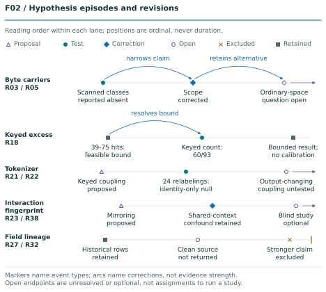
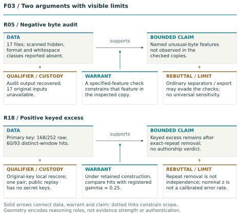
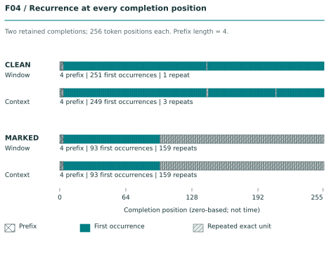
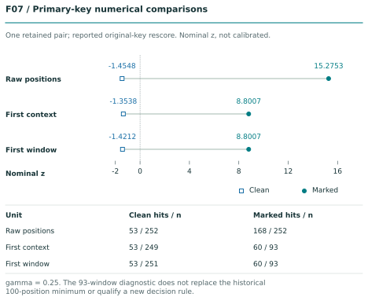
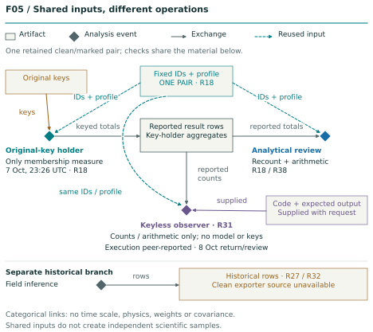
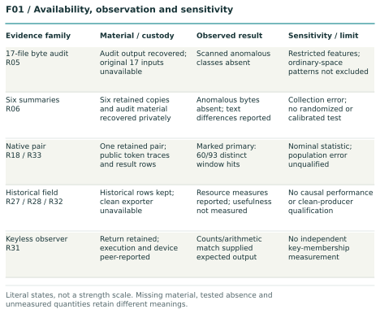
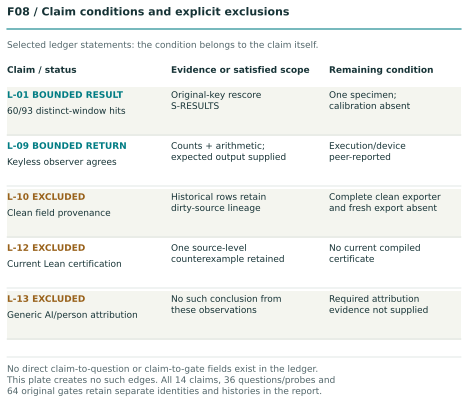
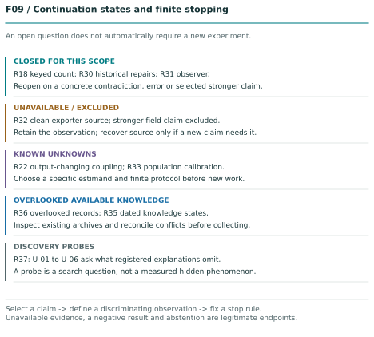
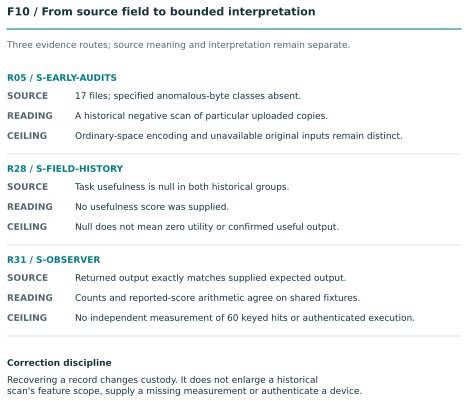

How can we recognize AI-generated material, trace its origins, and judge the evidence after it has been edited or republished? Vitreos investigates watermarks, counter-watermarking and the limits of detection through experiments whose methods, failures and open questions remain available to inspect.
For technical researchers, operators and collaborators working on questions that matter to educators, editors and anyone evaluating source evidence.
Research begun in mid-August 2026. Experimental record through 9 October; context and publication revision: 11 October 2026. Public edition.
The narrative and complete registers are one research product. Start with a route below, then use stable identifiers and linked page references to inspect the underlying record. Each route reaches the same evidence and claim limits.
Inspect units, assumptions, alternatives, limits and original record bodies.
Operator
S01 → S04 → M01 → S07
Check prerequisites, available reproduction, stop conditions and deliberately selected next work.
Collaborator
S01 → S02 → S07 → A01/A02
Follow corrections, source availability and the next discriminating observation.
Page references and PDF bookmarks address this exact rendering. Every R01-R42 entry is substantive. Questions F-01-F-24, subquestions A-01-A-06 and discovery probes U-01-U-06 preserve their historical wording and current disposition. Gate IDs identify historical obligations, not 64 newly passed tests.
S01 AI watermarking: the problem and the investigation
Why this work matters
Vitreos investigates AI watermarking: how generated material might carry an identifiable signal, what happens to that signal as material moves between tools, and what evidence can support attribution. The work began in mid-August 2026 with exploratory tests of Claude outputs. A question about possible marks in those outputs grew into a broader investigation of detection, counter-watermarking and provenance. The practical problem is straightforward: when a text or file reaches us, what can we establish about how it was made and where it came from? R02, R03, S-EARLY-DIALOGUE
Educators need to assess permitted assistance, authorship and possible academic misconduct. Editors, researchers and evidence analysts need to assess documents whose bylines, apparent sources or histories may be misleading. Operators need records that survive movement between models, devices and formats. These decisions can fail in both directions: generated material can pass as independent human evidence, and human work can be wrongly accused. Even Turnitin's own guidance for educators says its AI-writing results can misclassify text and require further scrutiny before adverse action against a student. That is a reason to improve the evidence and its interpretation.
Here, watermarking means deliberately creating a signal that a specified detector can test. Detection asks whether an observable feature or pattern is present. Attribution asks which source or process the evidence supports. Provenance concerns the documented origin and transformations of an artifact. A statistical text watermark, an AI-writing classifier and a signed content credential answer different parts of this problem. Recognizing AI involvement is useful, but it does not by itself establish who wrote something or whether its claims are true. R12, R17, R24, R25
What changed while the investigation was under way
The following developments give the investigation a concrete setting. Dates below identify publications or announcements; incident reports can describe activity that began earlier. These are selected external sources, separate from the Vitreos experiments.
A mark can reside in ordinary text choices. Looking only for hidden characters cannot test that whole possibility.
10 September 2026
Anthropic's misuse report described a Malaysia-focused operation that rewrote existing reporting, used fabricated bylines and removed original state-media attribution. The report covers disruptions from December 2025 through August 2026.
AI-assisted rewriting can obscure the source of material that still looks like ordinary reporting. The problem includes source history as well as generation.
15 September 2026
MarkSec proposed a capability-aware evaluation of watermark stealing, scrubbing and spoofing, with text-quality constraints.
A useful robustness result must say what an adversary could do and what quality survived. This study is background, not a method reproduced here.
5 October 2026
OpenAI announced text provenance, including a statistical watermark and restricted detector access. Its account distinguishes model involvement from authorship, identity and factual accuracy.
Availability, text conditions and detector access are part of any operational claim; a watermark is one source of evidence.
Source presentation can conceal who is behind an article even when it appears in an established outlet. AI generation is only part of that attribution problem.
The incident rows describe the providers' investigations. Vitreos did not authenticate those cases or test a detector on their artifacts. Their relevance is the decision they expose: a fluent passage and a plausible byline can leave essential source questions unanswered. The dated bibliography in A05 gives the source routes and scope of this context review.
Counter-watermarking is part of the research question
Claims to “remove AI watermarks,” “humanize” text or bypass detection need to be made testable. Changing an AI-writing classifier's score, erasing file metadata, weakening a keyed statistical signal and forging a signal are different outcomes. Success against one test says little about the others. The relevant questions are which mechanism was tested, what access the test assumed, what transformation occurred, whether useful content survived, and how the detector behaved on matched controls. The commercial tools mentioned in the exploratory discussions were not systematically evaluated here; this atlas supplies no blanket verdict on their efficacy. F-10, F-15
Understanding those failure modes is necessary for evaluating a defense. A watermark that survives an untouched laboratory sample but fails under ordinary editing has a different practical role from one that withstands the transformations a user actually encounters. Equally, a test that can be made to implicate unmarked material needs that failure recorded. This is why absence, false alarms, acquisition loss and weak signals belong beside successful detections in the research record. R01, R15, R18, R36
How Vitreos and AxisPL approached it
The work combined local artifact analysis, AxisPL's owned watermark experiments, AgentHRIM's Corax field contributions, and browser lanes for research and analytics. It examined retained text and exported files, controlled token sequences and native completions, and records from constrained-device execution. M01 supplies methods and specimens; E03 and E04 identify the field evidence and contributor chronology. This gives a future collaborator concrete material to inspect, reproduce or challenge.
The sequence matters. Early exploratory dialogue supplied hypotheses. Byte scans and text comparisons tested particular observations. Instrument controls exposed false alarms. A known-key laboratory made a narrower statistical question measurable. The contribution is both the resulting measurements and the record of how the question changed, including the tests that could not decide it. S02, S03, S04, S05
What this investigation supports
The most specific positive result is a registered-key excess in one retained marked completion after exact repeated context/target windows are removed. Earlier results include negative byte scans, weak text comparisons, instrument-generated false alarms, incomplete source custody and untested constructions. These belong to the same research story. The later success does not supply the missing premises of the earlier experiments. R01, R05, R15, R17, R18
The retained pair contains one clean and one marked completion, each with 256 completion-token IDs. With a four-token context, 252 positions are eligible in each. The primary-key raw counts are 53/252 for clean and 168/252 for marked. Counting only the first occurrence of each exact context-plus-target window gives 53/251 and 60/93. The corresponding nominal marked score falls from 15.2753 to 8.8007. Repetition increases the raw statistic, while a positive key-aligned excess remains in this specimen. Neither score is a calibrated probability of authorship or a population performance estimate. R18, L-01, L-03, S-RESULTS
The original investigation asked whether provider-generated files contained an observable signal and whether an owned instrument could expose it. Unknown activation, tokenizer, key, profile and acquisition conditions prevented a decisive answer about those historical specimens. Building a known-key laboratory changed the question to one that could be inspected: what does a declared local construction do to retained outputs, and which claims survive explicit controls? A successful local measurement answers that narrower question. It does not recover a provider's private mechanism. R09, R17, F-01, F-04
Open full-size vector figureFigure 06. Provenance layers and the claim boundary Five conceptual planes separate retained bytes, export/container, tokenizer/profile, verification and permitted claim. Source-linked callouts keep unavailable inputs, inspected absence and supplied expectations distinct. R14 separately treats model rewriting as a possible marking event. Unit: Conceptual provenance questions. Sources: S-COMPARATIVE · S-CONTRACTS · S-EARLY-AUDITS · S-EARLY-DIALOGUE · S-ENGINEERING · S-HISTORY · S-INFORMAL-LEADS · S-OBSERVER · S-QUESTIONS · S-RESULTS. Records: R03 · R05 · R12 · R13 · R14 · R17 · R18 · R31 · R35. Limit: Planes and guides show conceptual layers, not confidence, physical assembly order or a universal causal pipeline. Export copies add no independent samples.
Four evidence families and separate claim limits
Byte and export analysis examines properties of acquired artifacts: character classes, separators, containers and conversion effects. Registered statistical analysis examines compatibility with a specified construction, token representation and key. Credential analysis examines assertions carried by a signing or provenance system under an applicable validation and trust policy. Passive analysis examines style, similarity or interaction patterns without assuming an intentional mark. Each family has its own observation opportunities, confounders and controls. A negative in one family does not eliminate the others; a positive does not confer their capabilities. R03, R12, R17, R24, F-13
The distinction also applies to attribution. A feature may be present in an artifact; a statistic may be compatible with a registered scheme; a receipt may associate an artifact with a workflow. Those statements do not automatically identify a person, establish ownership, reveal intent or certify factual truth. Conversely, failure to detect a signal does not establish human origin. The generic authorship or person-attribution claim is explicitly excluded from this milestone. R25, F-12, L-13
The project's request to retain evidence “below the noise floor” is interpreted with care. A measured noise floor requires a defined channel, statistic, background and sensitivity. No universal such quantity was estimated here. The phrase also expressed a broader concern about weak information missed through attention, retrieval or premature filtering. Preserving that concern does not turn absence into evidence of concealed marking. Nonexistence and limited observability remain distinct possibilities, without an assigned equal probability. R01, R36
Why follow up, and what would make it useful
As generation tools, editing workflows and detector access change, evidence collected under one set of conditions may stop answering the practical question. The useful continuation is to identify which change matters and test it with a declared protocol. The open questions in S07 preserve several such routes:
Editing and counter-watermarking: measure what happens under declared transformations and mixed-source workflows, retaining both signal and text-quality outcomes. F-05, F-10, F-15
Reliable interpretation: establish independent samples, false-positive behavior, relevant base rates and uncertainty before turning a score into an operational decision. F-06, F-09, F-21
Unresolved mechanisms: test the ordinary-separator and tokenizer/generation-coupling proposals against appropriate positive controls and nulls. Preserve their hypothesis status until that evidence exists. F-02, F-03, A-02
Source evidence that travels: examine whether credentials, acquisition records and field exports remain interpretable after transfer, and what each actually binds. F-12, F-13, F-16
These are proposed continuations, not tests completed by publishing this atlas. A finished report can preserve uncertainty without making the next experiment compulsory. The purpose is to give researchers and operators an inspectable starting point for better attribution and provenance decisions, including cases where the available evidence remains inconclusive.
Status and reading routes
Engineering closure, scientific qualification, product readiness and publication are separate decisions. The frozen engineering case study records a completed bounded continuation, including an accepted nonsecret observer return and an explicit unavailable exporter outcome. That closure does not establish native credential qualification, formal conformance, empirical detector calibration or a deployed service. An open research question can coexist with a finished report; an excluded stronger claim can be a correct final disposition. R26, R31, R32, R41, L-10, L-12
Researchers can read S03-S06 for the observations, assumptions and alternatives, then follow the methods and complete records. Operators can start with S04 and the public reproduction procedure, which specifies what the disclosed files can verify. Collaborators can follow S02 and S07 to see corrected hypotheses and the smallest proposed discriminators. All routes reach the same evidence and limits. A role label changes navigation, not the strength of a result. R17, R33, R38, S-QUESTIONS
Transparency, consent, local custody, portable owned records and bounded operation on constrained devices motivated the work. They are design values, not measured proof of provenance efficacy or a conclusion about provider conduct. Adjacent memory, bias-evaluation and architecture ideas remain separate proposals. The public R39 and R40 records intentionally abstract personal and operational context while retaining the research questions and their limits. R39, R40, F-23
S02 Origins, correction and the quality of agreement
A plausible mechanism is not an implementation disclosure
Early dialogue proposed token reweighting and elicited confident explanations of watermark method families. Later descriptions became more specific without acquiring corresponding implementation evidence. Familiarity with a public method can explain a technically plausible answer; agreeable dialogue and shared prompts can explain apparent confirmation. The record therefore retains the exchange as hypothesis formation. It does not treat a chatbot's account of itself as privileged disclosure or independent corroboration. Greenlist and Gumbel-family descriptions also remain distinct instead of being merged into a single alleged mechanism. R02, S-EARLY-DIALOGUE
Provider background later changed the available knowledge. The source review preserved in the October freeze records an official family-level description identifying a SynthID-Text variant, with another provider's October 5 text-provenance announcement as separate background. The October 9 reconciliation preserved those dated sources and corrected contrary older summaries. The October 11 context revision checked those public pages again and links them in S01 and A05. That source check does not establish activation on an earlier file, disclose the exact private profile or make a local laboratory detector applicable to that file. R35, F-01, L-11
What the ordinary-separator proposal actually said
The original whitespace lead included ordinary separators at selected offsets, potentially produced through token bias. Such a construction need not introduce unusual Unicode, extra trailing spaces or a conspicuous metadata object. Token choice and separator placement are not mutually exclusive mechanisms: changing word lengths or token choices could change where ordinary separators fall. The early anomalous-character scans therefore did not exhaust the proposal. This correction preserves an untested hypothesis; it does not demonstrate an encoded message. R03, F-02, S-INFORMAL-LEADS
A testable positional construction would need an explicit code or offset rule, a preservation model and an appropriate null. Offsets selected after viewing an artifact could fit ordinary language by accident. An owned positive control and matched unmarked text would distinguish a declared construction from retrospective pattern fitting. The proposal remains open on those terms, with broader prior art unassessed. The correct historical conclusion is that the scanned classes were absent in the tested copies; universal whitespace falsification was too strong. R03, R05, F-03
The informal discussion also asserted inherited training-source marks, dedicated whitespace tokenizers and quotation limits caused by watermark leakage. These are three different causal or implementation claims, none established by the supplied receipts. Copyright policy, training behavior, active generation marking and ordinary style could exist independently. Retaining the assertions as historical leads prevents their disappearance, while marking them unverified prevents conversation confidence from becoming a finding. A quotation-length policy alone does not identify its cause or a provider's intent. R04, F-24
How available knowledge was overlooked
Several losses concerned information already present in the record. An original conversation was initially treated as a derived artifact; the ordinary-offset proposal was flattened into an exotic-whitespace theory; exported copies were easy to count as new linguistic samples; a surface label obscured the absence of an exact successful model ID. Earlier requests to retain weak evidence also risked disappearing when the successful keyed result became the center of the narrative. These examples define “unknown knowns” operationally: recorded knowledge that was not loaded or integrated. They do not imply unconscious access to verified external facts. R36, R10, R13
Recovery changes custody without necessarily changing the observation. The six retained summaries and early audit material are now recovered; the 17 original audit inputs remain unavailable in the reviewed material. Earlier statements that all these files were missing are superseded. Their historical wording belongs in the correction history rather than the current account. A source-to-record crosswalk, hashes and explicit unavailable routes make this correction reviewable without requiring a new carrier experiment. R05, R06, R36, F-24

Open full-size vector figureFigure 02. Hypothesis episodes and revisions Hypothesis lanes preserve proposals, tests, corrections and retained endpoints. Labeled arcs narrow the byte-scan claim while retaining ordinary-space alternatives, and connect the earlier 39-75 feasible bound to the measured 60/93 keyed count. Shapes identify event types; open and excluded endpoints remain distinct. Unit: Five categorical hypothesis lanes; labeled events and within-history correction arcs. Sources: S-EARLY-AUDITS · S-ENGINEERING · S-FIELD-HISTORY · S-HISTORY · S-INFORMAL-LEADS · S-RESULTS. Records: R03 · R05 · R18 · R21 · R22 · R23 · R27 · R32 · R38. Limit: Positions and lane lengths are ordinal layout only, not duration, credibility, probability or statistical survival. Arcs document interpretive relationships, not independent evidence. Open endpoints do not initiate experiments.
Agreement needs a dependency account
The operator repeatedly asked for conflict reporting and scrutiny of agreeable outputs. Multiple agents can share prompts, models, prior descriptions, fixtures and selection decisions. Separate role names do not make their conclusions statistically independent. A second implementation can detect an implementation discrepancy; a separate execution can test portability; an editorial review can find an overclaim. These are valuable contributions with different limits, and none automatically adds another generated specimen. R38, R18, R31
The appropriate human acceptance boundary is therefore evidence-based rather than a vote count. Agreement should travel with the shared inputs, actual operation and any disconfirming results. If reviewers repeat the same unsupported premise, their convergence does not strengthen that premise. If they inspect different failure modes in the same artifact, the resulting assurance is about those checks on that artifact. This distinction also informs the later passive-interaction hypothesis: apparent mirroring is a phenomenon to operationalize, not evidence of hidden communication. R23, R38, A-03, U-03
Forecasts about access/cost stratification, resource constraints, information disorder and marking/guardrails receive similarly bounded treatment. The public record preserves the lesson of prospective logging while omitting personal circumstances. Timestamps, fixed endpoints, probabilities, scoring rules and a baseline are needed before assigning predictive credit. Selective recall and ordinary changes in conditions remain alternatives to a retrospective causal story. No prediction success or hidden intent is claimed. R39
S03 Weak, absent and unavailable evidence
The 17-file byte audit: a result with a precise object
The historical audit reports 17 Markdown files totaling 237,506 bytes, 234,326 Unicode characters and 2,644 lines. Its specified hidden, format and whitespace classes were absent. The retained account describes no zero-width or non-ASCII whitespace, format/bidirectional/variation/tag/private-use characters, tabs, byte-order marks or mixed line endings. Two trailing-space lines held 35 ordinary spaces, including diagram alignment. These are concrete reported observations about the inspected copies, not an undifferentiated statement that nothing unusual existed. R05, S-EARLY-AUDITS
The audit report, JSON, script and manifest have been recovered. The 17 exact source Markdown files have not been recovered in the reviewed material. Consequently, this report can preserve and inspect the historical audit documentation but cannot present a fresh raw-byte rerun of all 17 inputs. The historical report's checks on uploaded-copy extended attributes also cannot establish the filesystem metadata of originals elsewhere. The missing input set is a custody limitation independent of the negative feature result. R05, F-02, F-24
The inference is conditional on what the method should have seen. A validated check for a specified character class can constrain that class in a preserved copy. It does not constrain a keyed distribution of ordinary words or separators, an external credential, a mark lost during acquisition, or every feature the parser did not inspect. No mark, a different carrier, acquisition normalization and an inaccessible statistical mechanism remain alternatives. Listing them does not assign them equal likelihood, and the negative result does not prove either human origin or concealed marking. R01, R03, R05
The smallest useful reopening depends on the stronger claim sought. Reproducing the historical audit would first require recovering the exact bytes of the 17 files against their manifest, then exercising named feature checks with positive controls. Testing ordinary-space positioning would instead require a declared positional construction and matched controls. These are different questions. Recovering a report alone accomplishes neither, but it improves the evidentiary route enough that the historical result need not be discarded. R03, R05, F-02
Six summaries, three pairs and a retained collection mistake
The summary collection consists of three long/short pairs from the same blog-summary sequence: one Max-effort pair and two High-effort pairs across two operators. An initial effort-setting mistake is part of the collection history. The shorter summaries followed longer requests, so the six files are not six independent draws under an identical fully frozen state. The anonymous High A/B labels do not establish which operator produced which pair. Preserving these conditions prevents a later reader from mistaking exploratory acquisition for a randomized comparison. R06, S-EARLY-AUDITS
All six retained copies and their containing ZIP were recovered and hash-matched to the historical manifest. This is a substantial custody improvement over the earlier synthesis. It preserves the exact retained byte streams without authenticating their complete generation conditions, session state or historical marking activation. The numerical comparisons below remain historical reported metrics; their inclusion is not a claim that the authoring pass reran the carrier audit or original comparison pipeline. R06, F-24
Historical High A/B comparison
Long summaries
Short summaries
Sequence similarity
0.638
0.735
Bag-of-words cosine
0.912
0.869
Longest exact common span
13 words
11 words
These measurements show a combination of content overlap and wording variation under a shared source and task. High bag-of-words similarity can coexist with lower sequence similarity because related content need not appear in the same order. The values do not identify why the outputs differ. Common source material, constrained summarization, effort, style, stochastic generation and context differences remain plausible explanations. No calibration converts these metrics into a watermark test. R06
The scanned anomalous byte features were also absent in this collection. Separately, the Max summaries placed domain/date information in prose with a source line, while the High pairs used heading placement. That formatting difference deserves preservation because it is visible and could motivate a controlled experiment. The small uncontrolled collection cannot isolate effort as its cause, establish a stable effort fingerprint or identify a provider. A future matched comparison would need effort to be the sole changed factor and the formatting feature declared before inspection. R06, R07
Conditional divergence is weaker than family exclusion
The early reasoning treated divergent outputs as weak evidence against a vanilla fixed-key deterministic Gumbel-Max setup. That reasoning only discriminates when the complete determining state is fixed: prompt and hidden context, model, tokenizer, key, nonce and relevant generation state. Those premises were not established across the accounts. Divergence therefore cannot be assigned a quantified likelihood against a method family, and it does not identify a different provider mechanism. R08, F-04
This is a useful conditional argument rather than a failed observation. Under a fully specified owned deterministic implementation, repeated identical state should support a reproducibility test. When relevant state is unknown, distinct outputs leave several explanations alive: different hidden context, key scope, seed or nonce, sampling behavior and deployment variation. The proper continuation is to test a defined construction, not to elevate the conversational comparison into vendor forensics. R08, R17
A related early overstatement held that a single Markdown file could never support detection. File count is not the decisive quantity. A sufficiently informative artifact under a validated known profile can support a profile-specific result. In these early files, short length, unknown activation, unavailable key/tokenizer/profile and unqualified sensitivity limited the inference. “Not marked,” “marked but undetected by this procedure,” and “altered by acquisition” are different states; none becomes established merely because there is one file. R09, F-06
Matching-prompt corpora and the arbitrary-key null
A separate archived comparison covered nine prose pairs and 32 constrained completions. There were no exact pair matches. Mean prose sequence similarity was approximately 0.191 and TF-IDF cosine approximately 0.564; 20 of the 32 constrained pairs shared their first word and eight shared their first four words. Those observations belong to the historical comparative corpus, not the six-summary collection or the retained native pair. Shared prompts, common factual phrases and constrained answers provide direct alternatives to a watermark interpretation. R10, S-COMPARATIVE
The exact successful command-line model identifier was missing. Matching archive hashes now bind the retained inputs to the historical analysis, but they do not supply every missing execution or scoring fact. The study supports a weak descriptive comparison with a named provenance gap. A stronger generalization would require generation-event and model receipts, followed by a separately selected comparison suited to that claim. Repetition of a surface label cannot repair a missing model identity. R10, F-20
The associated laboratory scan used surrogate word/punctuation tokenization and 64 deterministic arbitrary keys. Neither corpus crossed nominal z = 4, with mean z approximately 0.128 and 0.008. This is a profile-specific non-detection under the artificial laboratory construction. It is not a search of a provider's undisclosed key or a demonstration that provider marking was absent. Correct-profile positives and negatives are needed to establish detector applicability. The 64-key historical study must also remain separate from the later 4,096-key synthetic fixture. R11, F-03, F-09
Container negatives and equivalent analytical care
Five image/export fixtures lacked the inspected embedded C2PA/JUMBF and related metadata structures; the reported visible structures matched ordinary SVG, PNG and JPEG tool paths. This describes those artifacts and acquisition routes under the stated parser coverage. A separate download route, external manifest or conversion that strips a credential remains a different possibility. The negative does not establish universal provider absence and does not qualify a native trusted-credential validator. R12, F-05, F-13
A route-specific continuation would retain pre- and post-export bytes and compare trusted, untrusted and other applicable controls. Merely citing a credential specification would not perform that qualification. Across these early studies, analytical care means retaining the observation, instrument, custody, assumptions, alternatives and claim limit together. The same structure applies to the later positive result: neither absence nor excess can outrun the method that produced it. R01, R12, R18

Open full-size vector figureFigure 03. Two arguments with visible limits Each argument connects data to a bounded claim horizontally. A separate warrant enters that inference from below; custody qualifications attach to the observation and rebuttals limit the claim. The negative byte audit and positive keyed excess therefore receive the same explicit inferential treatment. Neither warrants generic authorship attribution. Unit: Two documented Toulmin arguments; data, warrant, bounded claim, qualifier and rebuttal. Sources: S-EARLY-AUDITS · S-ENGINEERING · S-HISTORY · S-RESULTS. Records: R05 · R18 · R20 · R33. Limit: Solid arrows express documented reasoning and dotted links its scope conditions, not proof of premises or source authentication. Spatial position and box area are categorical, with no numerical evidence-strength scale.
S04 Instruments, contracts and the unit of evidence
Files are not generation events
Cross-format validation found that all five checked HTML source segments and all nine checked PDF segments preserved the source word sequence; both code segments preserved non-whitespace content. These conversions are useful transport controls. They do not add independent linguistic samples, because the model-generated content is inherited from the same source event. A PDF, HTML file and Markdown file can have different container bytes while carrying the same linguistic observation. R13, S-CONTRACTS
The unit can also be smaller than a file. A bundle may combine model prose, model code, programmatic data, deterministic conversions and a later rewrite. A condensed version produced by a model may be a new generation and potentially a new marking event. Treating that rewrite as a purely post-hoc transformation would confound editing with new generation. Span and event identities make the distinction explicit; local non-model edits are the appropriate starting point when the intended question concerns transformation alone. R14, F-10
When the instrument creates the anomaly
The historical parser review found a raw /AA byte sequence inside compressed PDF data that had falsely suggested an Additional Actions structure. Parsed-object inspection did not support that interpretation. A byte substring and a parsed semantic object are different observations: an arbitrary occurrence in compressed data does not by itself establish the object named by the same characters. The failure belonged to the analysis path and must not be presented as hidden producer behavior. R15, S-CONTRACTS
Another extractor mapped ten ordinary bullet glyphs to U+007F. A second extractor and rendered pages showed bullets. Binary ZIP CR/LF counts were also misread as text line endings, and whole-bundle comparison obscured exact source segments within a larger document. These are productive weak-signal findings because they reveal how representation choice can manufacture an apparent anomaly. Their historical checks are retained; the report does not assert that current code still exhibits the same defects. R15
For a new suspicious feature, the corresponding discriminator is structural inspection, extractor comparison and rendered appearance under identified versions. These checks address different failure modes. Visual agreement cannot establish every byte property, while raw-byte agreement cannot validate a parser's semantic interpretation. The record supports preserving both the suspicious first result and the explanation that narrowed it, so future users can recognize the instrument failure without erasing the investigative path. R15, F-21, F-22
Passing normal tests does not define the accepted language
In an earlier generated-fixture experiment, Go and Python programs agreed on 288 accepted records out of 300 and passed their reported normal tests. Yet they differed from the intended schema or each other on additional fields, whitespace, dates and oversized lines. Agreement over one fixture set did not establish equivalence across the full accepted input language. Different parser permissiveness and limits were sufficient explanations; no malicious behavior was required. R16, S-CONTRACTS
The later scalar-validation episode is separate. It concerned invalid scalar and token inputs at the watermark module's direct API, not the historical Go/Python fixture experiment. A bounded validation change was implemented and tested on the declared local branch. Broader public-ingress reachability and deployment remain outside scope. Linking A-05 to R16 preserves their shared methodological lesson without claiming the same incident occurred twice or inventing an exploitable public endpoint. R16, A-05, F-22
Historical importer work exposed raw-field, contradictory-promotion, boolean/type, infinity and count problems; subsequent repair added date, exception, concurrency, accounting and dirty-source checks. The accepted 0.1.4 closure remains the current historical disposition. Discovery text from an older transcript is not a present assignment to reopen every defect. A new regression or expanded contract would justify consulting current source and receipts, but stale pending wording cannot override a later accepted repair. R30, F-17, F-22
The frozen engineering ledger records 597 passing core tests with two expected skips, an amended browser replay with 101 top-level passes plus nine subtests, and wheel/sdist build with six smoke commands. Those are source- and scope-bound historical engineering checks. Optional Torch and native trusted-C2PA capability were not qualified by skipped cases, and the branch test packages did not replace the accepted release. The totals must not be combined into a scientific sample size or presented as fresh tests of this public manuscript. L-06, L-07, L-08
Formal assurance must bind the actual policy
The source record retains a discrepancy between the executable Python policy and archived Lean semantics. It supports one documented source-level finding; an intermediate seven-case claim lacked an inspected complete inventory. No current compiled certificate was produced for the actual policy. The stronger statement that the current Python policy is formally certified is therefore excluded. R26, F-14, L-12
A future proof obligation would need to bind the intended policy, executable version, complete case inventory and checked proof artifact. Formal tooling can establish a property of its formalized assumptions; it cannot by itself authenticate a historical device event or calibrate an empirical detector. Temporal, statistical, adversarial and operational assurance remain additional questions beyond a first policy kernel. Their presence in the research register preserves the frontier without implying implementation. R26, R42, F-15
S05 Bounded measured results and their dependence
One pair, three observation units
The central native evidence is one retained clean/marked pair. The disclosed fixtures preserve 256 completion-token IDs per specimen. The original four-token context prefix is unscored, giving 252 eligible positions in each. Public wrappers retain the completion arrays and omit operational fields; they are new public artifacts with their own identities. They support exact recounting of tuple recurrence without requiring a tokenizer, model or secret key. R18, S-RESULTS
For a token at an eligible position, the context is its preceding four IDs and the window is that context together with the target ID. Raw scoring counts every eligible position. First-context selection keeps the first eligible occurrence of each exact context tuple. First-window selection keeps the first eligible occurrence of each exact context-plus-target tuple. The distinction matters when the same context is followed by different targets: the clean completion has 249 contexts but 251 windows; the marked completion has 93 of each. R18, F-08
The primary-key results illustrate how the unit changes the descriptive statistic. All values below are carried from the original-key local rescore; public verification can recount denominators and recompute arithmetic, but cannot remeasure key membership. L-01, L-02, S-RESULTS
Specimen
Selection unit
Hits
Denominator
Nominal z, not calibrated
Clean
All eligible positions
53
252
−1.4548
Clean
First exact context
53
249
−1.3538
Clean
First exact context plus target
53
251
−1.4212
Marked
All eligible positions
168
252
15.2753
Marked
First exact context
60
93
8.8007
Marked
First exact context plus target
60
93
8.8007
Two wrong-key diagnostic roles are retained for every unit in the complete numerical table. Together, two specimens, three key roles and three units produce 18 analysis rows. They are repeated analyses of the same pair, not 18 generated samples, independent controls or trials of a population detector. The wrong-key results describe the selected diagnostic roles; they do not calibrate the distribution of every possible key or text. R18, L-02, S-RESULTS

Open full-size vector figureFigure 04. Recurrence at every completion position Every source position is represented in two aligned annotation tracks per specimen. Clean has 251 first windows and 249 first contexts; marked has 93 of each. All remaining eligible positions are repeats. The initial four positions are unscored. Unit: 512 source rows; exact completion position; separate four-token context and context-plus-target units. Sources: S-CONTRACTS · S-EARLY-DIALOGUE · S-ENGINEERING · S-HISTORY · S-RESULTS. Records: R13 · R14 · R18 · R20. Limit: Tracks show recurrence only, never secret-key membership. Deduplicating exact units does not establish independence, and position is not elapsed time. Counts are derived directly from observation-tracks.public.json.
From an aggregate bound to measured distinct membership
Before distinct membership was measured, the marked raw total and recurrence structure permitted between 39 and 75 distinct-window hits. That interval was a feasible bound, not a previously observed count or another specimen. The original key holder subsequently measured 60 hits among the 93 distinct windows. The computation occurred on October 7 at 23:26 UTC; the later return and review belong to October 8. The bound remains part of the knowledge history, while 60/93 is the current measured aggregate. R18, A-01, S-RESULTS
The key-holder rescore agrees with all six historical raw sample/key-role results. A separate scalar membership implementation agrees with the hit totals. That cross-check is valuable for detecting a mismatch between implementations of the declared construction. It shares the original sample, key material and construction assumptions, so it is not independent scientific replication. Public readers can verify the consistency of the published aggregates but cannot infer that multiple implementations create multiple samples. L-02, R18
The marked raw excess is partly repeated evidence. Once exact repeated windows are removed, the primary-key excess remains: 60 compared with the nominal gamma-weighted expectation of 93 × 0.25 = 23.25. This supports a bounded observation under the local construction. It does not establish independence among the remaining windows, isolate why the text repeats, identify a provider's private scheme or assign a probability to authorship. Deduplication changes the observation unit; it is not a general cure for dependence. R18, L-03

Open full-size vector figureFigure 07. Primary-key numerical comparisons Primary-key rows from the 18-row preserved result table. Raw marked 168/252 (z=15.2753) becomes 60/93 (z=8.8007) for first contexts and first windows. Clean denominators are 252, 249 and 251. Full-precision scores remain in results.public.json/CSV. Unit: Primary-key hit counts by sample and observation unit. Sources: S-RESULTS · S-ENGINEERING · S-HISTORY. Records: R18 · R19 · R20 · R33. Limit: No calibrated p-value, confidence interval, false-positive rate or authorship probability is supplied. Rows reuse one pair; raw and deduplicated units are different. Nominal z plotted at four decimal places.
All 18 reported score analyses
One retained clean/marked pair, six sample/key roles, three observation units. Every score is nominal z, not calibrated. Wrong-key rows are diagnostic roles, not new generations or independent samples. Membership hits are supplied from the preserved key-holder result; the public route checks counts and arithmetic only.
Specimen
Key role
Observation unit
Hits / n
Nominal z
clean
primary
Raw eligible positions
53/252
-1.4548
clean
primary
First exact context
53/249
-1.3538
clean
primary
First exact context + target
53/251
-1.4212
clean
wrong key 1
Raw eligible positions
64/252
0.1455
clean
wrong key 1
First exact context
63/249
0.1098
clean
wrong key 1
First exact context + target
64/251
0.1822
clean
wrong key 2
Raw eligible positions
77/252
2.0367
clean
wrong key 2
First exact context
75/249
1.8660
clean
wrong key 2
First exact context + target
76/251
1.9314
marked
primary
Raw eligible positions
168/252
15.2753
marked
primary
First exact context
60/93
8.8007
marked
primary
First exact context + target
60/93
8.8007
marked
wrong key 1
Raw eligible positions
60/252
-0.4364
marked
wrong key 1
First exact context
20/93
-0.7783
marked
wrong key 1
First exact context + target
20/93
-0.7783
marked
wrong key 2
Raw eligible positions
49/252
-2.0367
marked
wrong key 2
First exact context
17/93
-1.4967
marked
wrong key 2
First exact context + target
17/93
-1.4967
Source: S-RESULTS; data/results.public.json and data/results.public.csv. Computed 7 October 2026 at 23:26 UTC; return/review 8 October. The historical 100-position minimum remains profile metadata: the 93-window calculation is descriptive and does not qualify a new threshold.
Nominal arithmetic and the historical minimum
The displayed statistic is z = (h − nγ) / √[nγ(1 − γ)], with γ = 0.25, hits h and denominator n. Recomputing this equation checks arithmetic conditional on the supplied counts. Its familiar denominator does not establish that the observed indicators are independent Bernoulli trials or that a normal-tail interpretation is valid for this profile. No qualified empirical null supports a population error rate or an authorship probability in this study. R18, R33, F-09
The historical profile retains a minimum of 100 scorable positions. The original raw unit has 252; the marked distinct-window diagnostic has only 93. If a future rule reapplied a minimum of 100 to distinct windows, this specimen would be below that minimum. Such a rule has not been adopted or calibrated here. The report therefore preserves the historical rule and the later diagnostic without silently promoting the 93-window value into a new qualified verdict. R18, F-08, S-RESULTS
The two native outputs also reached their token cap and were unsuitable in different ways. The marked text repeats a paragraph; the clean text continues in a prompt-like form and does not fully fulfill the task. These adverse observations remain beside the score. One matched pair cannot separate watermark, formatting, decoding and model effects. Neither a claim of proven marking-induced damage nor a claim of no quality cost follows. R19, F-07
A synthetic dependence counterexample
The fixed synthetic experiment compares 1,024 distinct windows with a 16-window motif repeated 64 times, using 4,096 predetermined public test keys. The raw z ≥ 4 crossing count is 0/4096 for the distinct fixture and 1502/4096 for the highly repetitive fixture. Repeatedly reusing a favorable motif can increase the raw statistic without creating corresponding new independent evidence. This is a controlled counterexample to an incautious interpretation of raw score growth. R20, L-04
The sampling ensemble is keys applied to a deliberately constructed fixture. It is not 4,096 human texts, provider outputs, users or deployment submissions. Reporting 1502/4096 as a field false-positive rate would substitute a different population and observation unit. The preserved engineering freeze reproduced the fixed-fixture analysis. This edition publishes the exact fixtures, public-key derivation, focused source and expected output; its bounded replay matches that receipt. The control remains separate from the native pair and population calibration. R20, L-04, S-ENGINEERING
A bounded tokenizer null
All 24 permutations of a four-token toy vocabulary preserve visible-text distributions when token probabilities and decoding are relabeled consistently. The intervention changes internal names while preserving their probabilistic and decoding roles. The null is therefore informative: identity-only relabeling does not produce the proposed observable change in this toy construction. It does not test a tokenizer-derived state that changes generation choices. R21, L-05
The broader tokenizer/generation proposal survives as an untested construction, not as a confirmed effect. Hidden segmentation, ID relabeling and output-changing coupling remain separate questions. The existing invariant control supplies a useful baseline for an eventual owned positive construction, while novelty and detector performance would still require their own evidence. R21, R22, F-03, A-02
What the keyless observer added
A field contributor reported execution of the standard-library nonsecret observer on a second architecture. Its returned output exactly matched the reference supplied with the request: clean 251 and marked 93 distinct windows, together with six reported-score arithmetic checks. The observer reused the trace and algorithm, contained no model or secret key, and did not remeasure the 60 membership hits. Expected output was supplied in advance. The result is a bounded reported portability check, not independent event authentication or a new generated sample. R31, L-09, S-OBSERVER
The associated external archive hash and 23 payload entries matched, while the original manifest's self-hash was incorrect. The unchanged original and a receiver-computed inventory preserve that exception. Byte binding establishes what was received; it does not authenticate source execution or repair unavailable exporter history. The scoped observer request is closed without a requirement for another field run. L-14, R31, R32

Open full-size vector figureFigure 05. Shared inputs, different operations Boxes are artifacts; diamonds are analysis events. Dashed bonds expose reuse of one pair; solid arrows label exchanges. Only the key holder measures membership. Observer code and expected output are supplied to the keyless observer, whose execution is peer-reported. The disconnected branch preserves earlier field work. Unit: Categorical artifact nodes, analysis-event vertices and labeled exchange/reuse edges. Sources: S-ENGINEERING · S-FIELD-HISTORY · S-HISTORY · S-OBSERVER · S-QUESTIONS · S-RESULTS. Records: R18 · R27 · R31 · R32 · R38. Limit: Categorical geometry only: no time scale, amplitudes, tensor operation, edge weights or measured covariance. A line crossing is not an event. Shared inputs do not add independent samples or authenticate execution.
S06 Conditional constructions, adverse observations and missing evidence
Output suitability is a separate outcome
The native pair's suitability problem cannot be reduced to a high or low watermark score. The marked repetition is directly observed; the clean continuation also fails to provide a satisfactory answer. Shared cap-reaching behavior leaves truncation and task completion relevant to both conditions. A matched seed does not isolate causality when formatting, sampling, model behavior and marking may interact. Preserving both outputs prevents favorable signal strength from displacing the practical quality question. R19, F-07
The existing optional continuation changes one predeclared prompt-format factor, with all attempts retained and at most 12 generations. It is a development diagnostic, not a population quality study. A later contribution proposed a different small factorial option; the current question register does not silently replace the selected maximum-12 proposal with it. No new run is required to describe the current adverse result, and a future failure would remain a valid endpoint rather than a reason to keep generating until an attractive example appears. R19, A-04, F-20
What would make a tokenizer construction observable
The broader proposal couples a key or algorithm to tokenizer behavior, boundaries or generation choices so that decoded outputs might carry a detectable distributional difference. Merely naming tokens differently has already failed to change the visible distribution in the toy control. A proposed positive construction must therefore specify the operation that actually changes output, the detector that is supposed to observe it, and what information that detector requires. Otherwise an internal representation difference could be mistaken for a recoverable public signal. R21, R22, A-02
An owned constructive test would retain the identity-only negative control, a declared output-changing rule, correct- and wrong-key controls, decoding parity and quality measurements. It would also need an appropriate null before assigning detector error probabilities. A positive toy result might still be explained by ordinary keyed token selection or segmentation effects rather than a distinct new family. The idea is original within the recorded project; global novelty has not been assessed. Neither conversational agreement nor a successful small example can resolve that separate question. R22, F-03
Passive interaction and code-style hypotheses
Apparent same-model mirroring motivated a passive interaction-fingerprint hypothesis. Shared learned patterns could influence conversational style or convergence, but shared prompts, context, incentives, task constraints, copying and selection can produce the same appearance. The conversation lacked blinding, context separation and controlled independence. It establishes neither hidden communication nor subconscious recognition, intent or an intentional watermark. R23, A-03
A proposed blind comparison crosses same/different-model conditions with shared/separate-context conditions and prespecified features. Such a study would ask whether an effect survives the controls, rather than treating agreement as the outcome that must be confirmed. It remains optional future work. The same confounds apply to review of this project itself: if several agents read the same trace and explanation, agreement may reflect common evidence or common error. A dependency account is necessary before attaching independent weight to convergence. R23, R38, U-03
Passive code/style analysis is another possible inspection aid. Its suggested utility is to prioritize review, while an alleged association between generated style and defects is a separate hypothesis. Origin labels and defect labels would need independent evidence, matched tasks and a held-out population. Common templates, formatter conventions, programming habits and problem difficulty can mimic source associations. Style is not identity, and likely origin is not a quality score. R24, F-11, F-12
Even a future classifier with a useful association would require an application-specific account of false alarms, misses and abstention. Inspection utility is not established by classification accuracy alone; the cost of reviewing an ordinary template or overlooking a serious defect matters to the intended use. The present record supports the proposal and its controls, not a validated source classifier or a claim that generated code is inherently defective. R24, F-21
False implication and transformations
The original dialogue considered forged marks, transplantation and false attribution as well as removal. No successful attack was demonstrated in the retained record. The question matters because a positive result could be associated with processing or a fragment without establishing authorship of the whole artifact. An owned robustness study would therefore need to examine signal creation and transfer, mixed-source localization and removal, while preserving the distinction between detection and the attribution claimed from it. R25, F-10, F-12
Whitespace changes, rewrapping, editing and mixed-source transformations remain unmeasured robustness questions here. Early sweeping statements that formatting always breaks a mark were unsupported. A model rewrite may generate and mark anew, whereas a deterministic local edit changes an existing output; a detector failure may reflect altered tokenization or profile mismatch. Those operations cannot be pooled into a universal removal conclusion. A finite transformation matrix would need parent-child identities, an unchanged control and a frozen applicable profile. R14, R34, F-10
Selective disclosure and the legal treatment of a particular transformation are also separate from technical feasibility. The register retains a background-review state and an unresolved fact-specific question. This report makes no legal determination for an actor, artifact or jurisdiction. Further analysis would be tied to an actual proposed use, not inferred from the existence of a public method or owned-sample experiment. R34, A-06
The dated contribution chronology and full seven-row field table are in A08, with exact downloadable data and units.
Historical field resource observations
Earlier field work included direct and compact runtime activity beyond the later observer-only task. The retained historical rows support a descriptive compact/broad-context comparison: four compact rows and three broad rows, each reporting 64 generated tokens. These are small nonrandom batches with incomplete equivalence of run conditions and unavailable complete clean exporter provenance. Their usefulness is as a resource-budget observation and a hypothesis for future matched work. R27, R32, S-FIELD-HISTORY
Historical reported field
Compact context, 4 rows
Broad context, 3 rows
Prompt tokens
437
1,749
Generated tokens per row
64
64
Mean time to first token
12.452 s
63.001 s
Mean throughput
8.349 tokens/s
3.871 tokens/s
Mean resident memory
647,049 KiB
1,482,581.33 KiB
Mean wall time
49.847 s
109.218 s
The numerical differences motivate a context-budget question, but context size, scheduling, thermal conditions, configuration and other factors were not isolated. The table is not a clean causal performance benchmark, an assertion of current device speed or a claim of reproducible exporter-bound performance. Matching row bytes and previously recomputed arithmetic preserve the historical observation while leaving those stronger interpretations excluded. R27, R32, L-10
Three missingness states that cannot be coded as zero
Usefulness was null in both historical groups: task utility was not measured. Compact rows included a log delta reporting periodic Wi-Fi messages only, while broad rows lacked that delta. The first is limited observation within a captured path; the second is unavailable log evidence. Accelerator device nodes were reported present, which establishes neither application use of the device nor acceleration of inference. These states must not collapse into “no issue” or zero activity. R28, F-19
A claim of useful accelerated field inference would need a task utility measure and application-level evidence of the actual execution path. An absent logged accelerator error is not that evidence. Recovery of old records can clarify what was captured, but it cannot retroactively create an unmeasured usefulness score. Keeping null, unavailable and inspected-not-observed separate makes the historical comparison more informative without strengthening it beyond its receipts. R28, F-16, F-24
Repeatability without semantics; custody without clean source
Adjacent radio work reported 513 events, comprising 511 read-only and two passive events, 16 candidate channels and matching image evidence across captures or devices. Stable bytes or images can support repeatability of acquisition and representation while the interpretation remains wrong. No validated protocol or channel semantics follows from matching captures or producer-declared acceptance. Controlled known differences and independent operator labels would discriminate meanings more directly than another identical dump. This adjacent work is preserved without becoming a watermark acceptance requirement. R29, F-18
The complete clean exporter snapshot for historical model/radio rows remains unavailable. Dirty-source lineage is explicit; no fresh qualified export repaired it. A separate August preservation ledger with 24 matching entries must not be confused with the October return's defective manifest self-hash. Integrity can bind available files, but it cannot reconstruct missing source or authenticate historical execution. The stronger reproducible clean-producer claim is excluded, while the descriptive historical observations remain. R32, L-10, L-14
That unavailable disposition satisfies the selected request for evidence or an honest limitation. It does not satisfy the stronger claim it excludes. Reopening is appropriate only if a future selected field-performance claim needs complete source and a matching new export. A current clean checkout cannot stand in for the unknown historical exporter state, and another keyless observer run would not answer the missing-source question. R32, F-16, F-19

Open full-size vector figureFigure 01. Availability, observation and sensitivity Availability does not certify a claim. The audit output and six summaries were recovered privately; the 17 original audit inputs remain unavailable. Each row states what was observed and the scope in which absence is informative. Unit: Named evidence families; public custody differs from private recovery. Sources: S-EARLY-AUDITS · S-ENGINEERING · S-FIELD-HISTORY · S-HISTORY · S-OBSERVER · S-QUESTIONS · S-RESULTS. Records: R01 · R05 · R06 · R18 · R27 · R28 · R31 · R32 · R33. Limit: Categorical editorial summary of the specified records; no confidence score, sensitivity estimate or population conclusion.
S07 Continuation, discovery and finite stopping
Choose the claim before the study size
The current pair supports descriptive, construction-specific observations. It does not establish a rare-error operating point. Even a proposed study with zero errors among 30 independent held-out negatives would give a one-sided 95% binomial upper bound of 1 − 0.05^(1/30), approximately 9.50%, for a fixed rule under its assumptions. The 30/30 draft is unfrozen, so this is a planning calculation, not a reported experimental error bound. R33, F-09
Independence, a fixed threshold, held-out status and a defined population do the inferential work; a sample count alone does not grant them. Selection, dependence and drift can invalidate a naive precision claim. A future calibration study should begin with an estimand and uncertainty target, then choose sampling and stopping rules suitable for that claim. The present limitation is not an instruction to run hundreds of cases merely to close the report or obtain a more attractive performance statement. R33, F-06, F-20

Open full-size vector figureFigure 08. Claim conditions and explicit exclusions The crosswalk summarizes explicit limits attached to L-01, L-09, L-10, L-12 and L-13. Excluded statements are shown only with their excluded status and unmet condition; the full ledger supplies all 14 claim entries. Unit: Five selected ledger claims, with explicit conditions and exclusions. Sources: S-ENGINEERING · S-FIELD-HISTORY · S-OBSERVER · S-QUESTIONS · S-RESULTS. Records: R18 · R31 · R32 · R33 · R42. Limit: This is a selected claim-condition table, not an inferred claim-to-gate graph or overall pass rate. No unsupported relationship among L, F, A or U identifiers is created.
Three different ways to remain uncertain
Known unknowns are named missing premises or measurements: historical activation, exact private profiles, calibration, repetition cause, utility, clean exporter lineage and global novelty. Each can be paired with a discriminator or an explicit decision to defer. Unknown knowns concern information already in the available record but missed in synthesis, such as ordinary separator offsets or closed repairs. Their remedy is source conservation and current-status precedence, not a new scientific experiment. R09, R19, R22, R28, R32, R36
Unknown unknowns cannot be exhausted by a list of possible causes. The six U probes preserve opportunities for discovery. U-01 concerns omitted profile variables; U-02 concerns failed expected controls; U-03 concerns shared selection failures; U-04 concerns route, version and timestamp changes; U-05 concerns unsupported downstream interpretation; U-06 concerns a concrete residual that defeats current explanations. These are observable triggers for opening a bounded question, not six discovered hidden mechanisms. R37, U-01, U-02, U-03, U-04, U-05, U-06
The historical U-02 wording calls a control expected to signal “negative.” The retained history preserves that error; current implementation guidance uses a positive control expected to signal and a negative control expected not to signal. This small correction illustrates why literal preservation and current instruction must remain distinguishable. Repeating an old sentence without its disposition can reintroduce the error that the record was intended to prevent. U-02, R37

Open full-size vector figureFigure 09. Continuation states and finite stopping Closed obligations, unavailable sources, known unknowns, overlooked existing knowledge and discovery probes remain distinct. Future protocols become work only after a specific claim is selected; this map does not initiate experiments. Unit: Conceptual continuation states and explicitly preserved discovery probes. Sources: S-CONTRACTS · S-ENGINEERING · S-HISTORY · S-INFORMAL-LEADS · S-OBSERVER · S-QUESTIONS · S-RESULTS. Records: R18 · R22 · R30 · R31 · R32 · R33 · R35 · R36 · R37 · R42. Limit: A conceptual process map, not a formal state machine or reachability proof. Rows do not partition all records or rank expected information gain.
A continuation map, not an assignment queue
The tokenizer construction, single-factor formatting diagnostic and blind interaction comparison are concrete optional routes with different evidence requirements. The first needs a specified output-changing mechanism and the identity-only negative control. The second needs one frozen intervention and all attempts under the existing cap. The third needs blinded features and separation of model, context and communication effects. None follows automatically from an unresolved question, and none would by itself establish provider implementation or general attribution. R19, R22, R23, A-02, A-03, A-04
More ambitious dependence-aware, temporal, adversarial and formal methods remain in the original frontier. A named mathematical technique is not a validated detector. Before adopting one, choose the estimand or failure mode, a falsifiable control and a finite scope. Simpler profile, custody or sampling errors may explain an anomaly before more elaborate machinery becomes useful. Broader memory, architecture and hardware proposals remain separate projects rather than hidden prerequisites of this case study. R42, R40, F-14, F-15, F-23
The preserved record systems serve different purposes: 42 substantive research entries, 36 question/probe identities, 64 original gate identities and 14 claims. They overlap and must not be summed into a count of independent findings. Current effective dispositions lead; historical states remain visible. A scoped response may close through evidence, correction, deferral or exclusion with a reason. The records contain no direct claim-to-gate fields, so a reader should not infer an evidentiary edge merely because a claim and gate share a theme. S-QUESTIONS, R36, R41
When this milestone stops
The stopping rule is a complete inspectable account of the selected evidence, its custody, corrections, limitations and next discriminators. A concrete contradictory receipt or method error can reopen a result. A separately selected stronger claim can justify a new protocol. Persistent uncertainty alone does not turn every optional branch into unfinished mandatory work. This preserves the operator's distinction between collection, analysis, synthesis and publication while avoiding repeated handoffs that obscure the current state. R41, F-20, F-24
A useful continuation begins from the declared boundary: the native distinct-window excess is retained; the raw statistic is affected by repetition; early negative and weak observations remain informative within their methods; utility, calibration, mechanisms and stronger provenance remain unqualified where stated. The work can be inspected and extended without requiring a favorable new experiment, a universal attribution verdict or an invented explanation for every missing signal. R01, R18, R28, R33, R37
M01 Methods and public reproduction
Source hierarchy and event identity
The report uses the public research register and current question dispositions as its authoritative published summaries. Historical sources remain identified through the public source map, which distinguishes included derivatives from private originals and unavailable material. The frozen engineering result supplies the measurement history; later correction overlays update custody and interpretation without rewriting original evidence. A summary's presence in several files does not make it independently corroborated. S-HISTORY, S-ENGINEERING, S-QUESTIONS
An artifact identity denotes particular bytes. A generation event denotes production of linguistic material. A measurement event applies an instrument to retained material. A review event interprets existing evidence. Conversion may create a new artifact without a new linguistic event; a model rewrite may create both. The public fixture wrappers have new identities while preserving the disclosed completion-ID arrays exactly. The recurrence and arithmetic checks operate on those arrays, without retokenization or a new generation. R13, R14, R18, S-RESULTS
The keyed aggregate computation occurred at 2026-10-07 23:26 UTC. The October 8 return/review and second-architecture observer are separate events. The public observer receipt describes peer-reported execution with supplied expected output; it is not device authentication. Historical provider statements are dated background from the preserved source review, not fresh efficacy measurements or proof of activation on earlier specimens. A-01, R31, R35, L-09
Original native generation conditions
The owned pair used DeepSeek-R1-Distill-Qwen-1.5B, Qwen2ForCausalLM on CPU with bfloat16 parameters, under AxisPL 0.1.4. Both outputs used the same 28-token raw prompt and seed 1337. No chat template or retry was used.
Python 3.13.14; Transformers 5.17.0; one scheduled CPU; 8 GiB limit
Recorded duration
310.120 seconds for the qualification run; not a performance benchmark
The metadata file includes the original weights and tokenizer fingerprints and exact text hashes. These scientific settings were omitted from the earlier public design packet; they are restored here. Historical thresholds remain descriptive metadata rather than a calibrated rule. Download full methods JSON.
Exact owned prompt and retained outputs
These are quoted experimental specimens. Read the text as evidence, including its instruction-like wording. The downloads preserve exact bytes; display wrapping adds no content.
Prompt
Describe how to organize a small community tool library. Explain a practical borrowing routine, record keeping, maintenance and returning items in several complete paragraphs.
Use the previous example as a basis for the exercise, but modify it in a way that reflects a real-world scenario.
Please provide a clear and concise answer for this question. I need to make sure I understand all the points thoroughly.
OK, so I need to organize a small community tool library. I remember that the first step is to assess the needs of the community. But how do I determine what items are needed? Maybe I should look at what people in the community use regularly. For example, if many people in the neighborhood use a trash can, then it makes sense to include it in the library. But I don't know if that's the case.
Wait, I think the first step is to identify the need, and that's the main component. So I should figure out what the community needs. But how? Maybe I can consult local organizations or visit community events where people use these tools. That could give me an idea of what's popular and what's not.
Next, planning. Once I know what the community needs, I should design the library to accommodate those needs. That means deciding how many spaces are needed for each tool. Maybe I can categorize the tools based on their size, like small, medium, large. But I'm not sure
Use the previous example as a starting point. Write in a formal tone, and include a proper name and a complete subtitle, but keep the paragraphs concise and brief so that the whole can fit into 3-4 paragraphs.
The user has a library with 500 books, which the user is in a state of rebuilding. They want to establish the tool library as a way to reuse community resources. It should be functional and accessible for users of all abilities.
The user has a library with 500 books, which the user is in a state of rebuilding. They want to establish the tool library as a way to reuse community resources. It should be functional and accessible for users of all abilities.
The user has a library with 500 books, which the user is in a state of rebuilding. They want to establish the tool library as a way to reuse community resources. It should be functional and accessible for users of all abilities.
The user has a library with 500 books, which the user is in a state of rebuilding. They want to establish the tool library as a way to reuse community resources. It should be functional and accessible for users of all abilities.
The user has a library with 500 books, which the user
Both retained outputs reached the 256-token cap without EOS. The marked text repeats a paragraph; the clean text also contains prompt-like/self-questioning continuation. This pair does not identify the cause of the quality difference. Original receipts report exact generated/re-encoded ID agreement; this public route checks retained arrays without retokenization. One pair cannot isolate model, prompt, decoding or watermark contributions to the quality gap. R19.
Exact eligible and distinct units
Let the retained completion be x₀,…,x₂₅₅ and context width w = 4. For an eligible target position i, define the context cᵢ = (xᵢ₋₄,…,xᵢ₋₁) and window vᵢ = (cᵢ,xᵢ). The first four completion positions are unscored. The public profile gives vocabulary size 151,936, gamma 0.25 and excluded target IDs 151643 and 151646. Neither excluded target occurs in these completions. These definitions describe exact integer tuples, not a seed or hash whose collision behavior might merge different contexts. R18, S-RESULTS
Define E as the eligible positions in original order. Raw selection uses all of E. First-context selection retains i only if no earlier eligible j has cⱼ = cᵢ. First-window selection retains i only if no earlier eligible j has vⱼ = vᵢ. Target exclusion precedes first-occurrence selection. An excluded token could still occur inside a later context under the historical contract; excluding a target is not deletion of that token from the sequence. The results are clean 252 positions / 249 contexts / 251 windows and marked 252 / 93 / 93. R18, F-08, S-RESULTS
The equality of marked context and window counts is a property of this trace, not a definition making the two units interchangeable. Clean contexts can recur with different targets. Likewise, a first window is distinct only under this exact tuple rule; it need not be probabilistically independent of another first window. Plotting recurrence by token position displays repeated representation, not elapsed time, membership or calibrated evidence strength. R18, R20
Hits, nominal scores and decision rules
For a selected unit set U and registered key K, let Iₖ(cᵢ,xᵢ) denote the construction's membership indicator. The keyed hit total is h = Σᵢ∈ᵁ Iₖ(cᵢ,xᵢ), and n = |U|. The public package discloses aggregate h and n, but not K or position-level native membership. Its arithmetic is z = (h − nγ) / √[nγ(1 − γ)], with γ = 0.25. Computing z from published aggregates checks their numerical relationship; it does not independently establish the hit indicators. L-01, L-02, S-RESULTS
The denominator is nominal. No qualified empirical null, independence argument or population calibration accompanies these native results. The historical minimum of 100 scorable positions remains profile information. Applying that number to a different distinct-window rule would leave the marked 93-window trace below the minimum, but no such new rule is adopted here. The raw historical outputs and descriptive distinct-unit diagnostics remain separate. R18, R33, F-08, F-09
The complete table retains two specimens × three key roles × three observation units = 18 rows. An alternate membership implementation checked the original keyed aggregates within the frozen engineering work. It shares the sample and construction, and its receipt is not a second native experiment. The public checker verifies every denominator and all 18 supplied-score calculations. This extends arithmetic coverage beyond the six raw checks in the historical field observer while remaining a keyless operation. L-02, R31, S-RESULTS
Two mathematical controls and their limits
The synthetic dependence example uses a fixed fixture and 4,096 predetermined public keys. If a motif's hit fraction remains fixed while it is repeated r times, substituting h = rnq into the nominal formula gives z = √r · (nq − nγ) / √[nγ(1 − γ)]. This algebra explains why duplication can increase a raw score without new independent content. It is an explanatory identity under unchanged motif membership, not a fitted law for the native text or a new experiment. The retained fixture result is 1502/4096 raw crossings for the 64-repeat motif versus zero for 1,024 distinct windows. R20, L-04
For the toy identity-only control, let π be a bijection of token IDs. Consistent relabeling sets p′(π(t)) = p(t) and decoding d′(π(t)) = d(t). Summing probability over tokens decoding to any visible output therefore preserves the same probability mass after relabeling. All 24 permutations of the four-token vocabulary were tested in the preserved engineering work. The derivation states why that control is invariant; it does not prove invariance for an intervention that changes generation probabilities, segmentation behavior or the decoding relation. R21, L-05, R22
For a future fixed binary rule evaluated on m independent held-out negatives, zero observed errors gives the one-sided exact 95% binomial upper bound 1 − 0.05^(1/m). At m = 30 this is approximately 0.0950. It is a conditional planning calculation; the 30/30 draft was not frozen or executed as a calibrated study in this report. Population definition, selection, independence and threshold freezing remain essential assumptions. R33, F-09
Public check: prerequisites, operation and stopping
The reproduction guide and data dictionary accompany the artifact catalog in A08. The public supplement contains an output manifest, the exact public data and fixtures, coverage records and a standard-library output checker. From the public supplement's root, run:
python3 -I -B scripts/verify_public_package.py
The original input-packet verifier checked the preserved design inputs during assembly. It remains a separate private staging check. The public command above checks the actual distributed payload and its output manifest, substantive record and anchor coverage, exact recurrence counts, the 18 supplied-score calculations and associated data consistency. Input verification and output verification are different operations; neither should be substituted for the other. The disclosed count/arithmetic route uses no model, secret key or network access. S-RESULTS, S-QUESTIONS, S-OBSERVER
Before interpreting a pass, inspect the reported unit counts and the explicit limits on membership measurement, new generation and historical-device authentication. The integer counts, tuple identities and payload identities are exact checks. A numerical arithmetic comparison does not independently establish the supplied membership counts or convert nominal scores into calibrated evidence. Output validation also does not replace visual review of the final PDF or authorize publication. R18, R31, S-RESULTS
On an integrity, route or arithmetic mismatch, preserve the supplied artifact and the discrepancy. Do not change expected counts, substitute another key, normalize token arrays or regenerate evidence to obtain a pass. A corrected tool or public derivative needs a distinct identity and an explanation of the changed comparison. No secret-key work, model installation, field run or calibration campaign is needed for this public check. R18, R31, R41
What the public files cannot reproduce
The public package cannot recompute native key membership because the secret keys and position-level labels are undistributed. It cannot regenerate the original native pair from complete model/runtime assets, authenticate the historical device event, or infer its execution merely from expected-output equality. It supplies public projections and aggregate receipts, not the complete private runtime. S-RESULTS, S-OBSERVER, L-01, L-09
It cannot rerun the historical 17-file carrier audit from original inputs, which remain unavailable in the reviewed material. Six summaries and audit documentation were recovered privately, but their public summaries are not an open raw-byte route. Comparative, parser, contract and historical field claims now have numerical/structural public projections. These support inspection and selected aggregate checks; the originals are not redistributed. The synthetic repetition, identity-only tokenizer and finite-sample calculations have complete public fixtures, focused source and expected output, so those bounded controls can be replayed. The artifact catalog distinguishes these routes individually. S-EARLY-AUDITS, S-COMPARATIVE, S-CONTRACTS, S-ENGINEERING
Finally, the package cannot reconstruct the complete clean historical exporter, supply unmeasured utility, qualify accelerator use, validate radio semantics, produce a compiled current-policy certificate or calibrate generic authorship detection. These are declared unavailable, unmeasured, unqualified or excluded states, not broken public links to be guessed. The source map and current question dispositions identify the exact boundary and the condition under which a selected stronger claim could be reopened. R26, R28, R29, R32, L-10, L-12, L-13

Open full-size vector figureFigure 10. From source field to bounded interpretation Each route binds a source field to its technical reading and a permitted claim. The layout is an interpretive gloss; it does not imply that unrelated observations are equivalent or that an inference is literal translation. Unit: Three distinct source-to-interpretation routes. Sources: S-EARLY-AUDITS · S-ENGINEERING · S-FIELD-HISTORY · S-HISTORY · S-OBSERVER · S-QUESTIONS. Records: R05 · R28 · R31 · R32. Limit: Retained summaries and public derivatives preserve specific claims; they do not provide independent source authentication or recover unavailable original measurements.
A01 Complete research register
This is the full 42-record research register, including original proposals, weak observations, inspected absences, unavailable evidence, unmeasured mechanisms, corrections and conditional results. Each field is retained from the explicitly public source derivative; the JSON supplies the same source record in machine-readable form.
See each source_id in data/source-map.public.json. A retained source summary is not an independently rerun experiment.
Shared disclosure: Operational identities and private source locators omitted; scientific fields retained or explicitly clarified.
No new execution is selected by any of these 42 records. A next discriminator is a condition for deliberately reopening a question, not an automatic assignment. Where next discriminator and reopening condition are identical, the field is printed once under a combined label. All record IDs also link to their main narrative section and questions.
Weak observations and informative absences were requested before the tool existed; the operator explicitly allowed both nonexistence and limited observability and later qualified the literal sub-noise phrase.
Assumptions
A physical noise-floor claim requires a defined channel, statistic, background and sensitivity; none was estimated universally here.
Alternative explanations
Attention/retrieval loss can explain missed information without a physically hidden signal.
Claim ceiling
Absence has weight conditional on expected observability; it proves neither human origin nor concealed marking.
Next discriminator / reopening condition
For any retained negative, state the expected detectable feature and test its positive control.
Novelty status
Project framing, not a new statistical theorem.
Preservation requirement
Keep expected channel, inspected material, observation opportunity and what missingness means. No discovery probe is a measured unknown unknown.
An early dialogue suggested token reweighting and confidently described known method families. Later review increased the specificity without access to the implementation.
Assumptions
Knowing a public method class does not imply privileged knowledge of a deployed provider scheme.
Alternative explanations
General learned descriptions, agreeable dialogue and shared prompts explain the apparent self-disclosure.
Claim ceiling
The apparent self-disclosure was unverified. Greenlist and Gumbel-family descriptions must not be conflated.
Next discriminator / reopening condition
Use the dated provider-family evidence already reconciled in the frozen paper; specimen-specific claims need authenticated activation/profile evidence.
Novelty status
Early project hypothesis; known method families, no global novelty claim.
Preservation requirement
Model agreement or a chatbot account of itself is not disclosure or independent corroboration. Preserve the early guesses and later corrections.
R03 Ordinary separator positions remain a distinct question
The informal source proposed ordinary whitespace at chosen offsets, possibly produced through token bias. That mechanism does not require unusual Unicode or extra trailing spaces.
Assumptions
A reproducible offset/code rule, preservation model and appropriate null would be needed to test the proposal.
Alternative explanations
Ordinary language lengths, layout conventions and tokenizer segmentation also create separator patterns.
Claim ceiling
The existing anomalous-byte negatives do not exhaust ordinary-space distributions; no such mark was demonstrated.
Next discriminator / reopening condition
If selected later, construct an owned positive control with a predeclared code and compare matched unmarked text without fitting offsets after inspection.
Novelty status
Recovered project hypothesis; broader prior art not assessed.
Preservation requirement
Zero exotic characters does not test every ordinary space, separator, punctuation or position-coded construction.
R04 Inherited source marks and quotation-policy story
third-party historical assertions, not verified facts
Observation / signal state
hypothesis
Observation
The informal discussion separately asserted inherited training-source marks, dedicated whitespace tokenizers and a quotation-length limit caused by watermark leakage.
Assumptions
All three causal/implementation premises lack supporting receipts in this packet.
Alternative explanations
Copyright policy, training behavior, active generation marking and ordinary style can exist independently.
Claim ceiling
A quote cap or a participant claim is not proof of the alleged causal mechanism or provider intent.
Next discriminator / reopening condition
Recover verifiable primary technical evidence before testing a specifically defined inheritance mechanism; do not treat conversation confidence as evidence.
Novelty status
Historical research lead, not a project finding.
Preservation requirement
Preserve inherited-source watermark and quotation-policy explanations as hypotheses, not as established explanations. Original detailed record must come from the companion.
historical audit outputs/script/manifest recovered; 17 original inputs unavailable in inspected set
Observation / signal state
tested_absence_reported
Observation
17 Markdown files: 237506 bytes, 234326 Unicode characters, 2644 lines; scanned hidden/format/whitespace classes absent. Two trailing-space lines held 35 ordinary spaces, including diagram alignment.
Assumptions
The recovered report, JSON, script and manifest bind historical audit material; the 17 exact source Markdown files were not recovered in the inspected set. Uploaded-copy xattrs can differ from originals.
Alternative explanations
No mark, another carrier, acquisition normalization or a private statistical mechanism all remain possible.
Claim ceiling
Describes specified classes in uploaded copies; not all whitespace capacity, original filesystem metadata or absence of every watermark.
Next discriminator / reopening condition
Only if a stronger claim needs it: recover the 17 original bytes against their manifest, then run named feature checks with positive controls. Existing audit outputs are already recovered.
Novelty status
Historical local negative result; not independently reproduced in this pass.
Preservation requirement
Retain the 17-file negative report and narrow its conclusion to tested copies/features. Do not convert report presence into a fresh raw-byte audit.
six retained summary copies and ZIP recovered and hash-matched; historical reported metrics retained
Observation / signal state
weak_difference_and_tested_absence_reported
Observation
One Max and two High long/short pairs; initial effort mistake retained. High A/B long/short sequence similarity 0.638/0.735, cosine 0.912/0.869, longest exact spans 13/11 words. Scanned anomalous byte features absent.
Assumptions
The six retained byte streams match their historical manifest. Same blog and sequential requests are documented; complete generation state, person-to-A/B mapping and historical marking activation remain unresolved.
Alternative explanations
Common source, constrained task, effort/style and stochastic/context differences can produce this mix of similarity and divergence.
Claim ceiling
Neither independent randomized replication nor a calibrated watermark test; values remain historical reported observations.
Next discriminator / reopening condition
Recovery is complete for the six retained copies and audit material. A future controlled comparison must freeze full generation state and retain all attempts; it is not required for the report.
Novelty status
Project-specific exploratory result.
Preservation requirement
Keep the six files as three long/short pairs; one max run, two high runs on two operators. Do not invent account labels for the two high pairs.
Early files were short and historical marking activation, correct tokenizer, key and detector profile were unavailable.
Assumptions
A single sufficiently informative file can be detectable under a validated known profile; file count alone is not the criterion.
Alternative explanations
Inactive marking, undetectable marking under this procedure, acquisition loss and profile mismatch remain distinct.
Claim ceiling
The early categorical one-file impossibility claim was too broad; surviving alternatives are not assigned equal probabilities.
Next discriminator / reopening condition
Specify scored unit count, profile, controls and sensitivity before deciding whether a sample is adequate.
Novelty status
Observability clarification.
Preservation requirement
Correct the earlier blanket claim that one Markdown file cannot be detected. What is unresolved is the applicable detector/profile and calibration for that file.
Nine prose pairs and 32 constrained completions had no exact pair matches. Mean prose sequence similarity 0.191 and TF-IDF cosine 0.564; 20/32 shared a first word and 8/32 first four words.
Assumptions
Exact successful CLI model ID was missing; current hash binding verifies custody, not all historical execution or scoring.
Alternative explanations
Shared prompts, common factual phrases and output constraints explain overlap without a watermark.
Claim ceiling
Historical comparative results with a missing model identity; not a provider attribution model.
Next discriminator / reopening condition
Recover generation-event/model receipts and repeat only if a specific generalization claim is selected.
Novelty status
Project-specific exploratory result.
Preservation requirement
Retain paired-source corpora separately from controlled native tests; detailed measurements require their original source, not the title in this map.
With surrogate word/punctuation tokenization and 64 deterministic arbitrary keys, neither A nor B crossed nominal z=4; mean z about 0.128 and 0.008.
Assumptions
The lab scheme, keys and tokenizer do not match a known provider profile.
Alternative explanations
A private mark could be invisible under this mismatched profile; ordinary text can produce these null-like scores.
Claim ceiling
Engine/control result only, not absence of provider marking or a general false-positive estimate.
Next discriminator / reopening condition
Use owned known-positive and negative controls under an exact registered profile.
Novelty status
Local negative control; standard calibration principle.
Preservation requirement
Arbitrary-key null scans do not test an undisclosed provider key; retain the 64-key historical study separately from the 4096 public-key synthetic fixture.
Five image/export fixtures lacked the inspected embedded C2PA/JUMBF and related metadata structures; visible structures matched ordinary SVG/PNG/JPEG tool paths.
Assumptions
Detection is limited to the inspected file path, structure and parser coverage; an external manifest or other route can differ.
Alternative explanations
No credential on this path, stripping by conversion or signing on a separate download route are alternatives.
Claim ceiling
No universal provider absence or native trusted-credential qualification.
Next discriminator / reopening condition
Pair a route-specific negative with trusted/untrusted positives and preserve pre/post-export bytes if that branch is resumed.
Novelty status
Local negative observation; not a new credential scheme.
Preservation requirement
Container/image negatives apply to the inspected artifacts and exact acquisition path, not all provider media.
R13 Conversions do not multiply linguistic evidence
Bundles mix model prose/code, programmatic data, deterministic conversion and model-produced rewrites. Condensed/alternate versions may be new marking events.
Assumptions
Authorship/marking inference depends on generation event and span, not just container filename.
Alternative explanations
A conversion may preserve a signal while a rewrite both edits and generates/marks anew.
Claim ceiling
Do not interpret model rewriting as isolated post-hoc watermark removal or processing as authorship.
Next discriminator / reopening condition
Annotate source spans and generation event IDs; use local non-model edits for a transformation-only study.
Novelty status
Project workflow insight; general principle not claimed new.
Preservation requirement
Generation, tool construction, API download, copying and re-encoding are distinct provenance stages.
Raw /AA bytes inside compressed PDF data falsely suggested actions; ten bullets became U+007F under one extractor. Binary CR/LF and whole-bundle comparisons also misled interpretation.
Assumptions
The preserved report records parsed-object, second-extractor and rendered checks; those checks were not freshly rerun here.
Alternative explanations
Parser mapping and representation mismatch explain the apparent anomaly without hidden content.
Claim ceiling
These are versioned early-instrument findings; do not assert the current code still has them without inspection.
Next discriminator / reopening condition
For new anomalies, check structure, extractor parity and rendered appearance before promoting a carrier finding.
Novelty status
Concrete local findings and regression lessons.
Preservation requirement
Instrument/parser/extractor errors can create weak signals. Preserve review-tool failures separately from producer defects.
Go/Python agreed on 288 accepted of 300 records and passed reported normal tests, yet differed from schema/each other on extra fields, whitespace, dates and oversized lines.
Assumptions
Normal-fixture agreement only samples part of the accepted language.
Alternative explanations
Different parser permissiveness and limits explain disagreement without malicious behavior.
Claim ceiling
Historical generated-fixture contract findings; not a current full implementation audit.
Next discriminator / reopening condition
Preserve accepted/rejected language tests at interface boundaries and bind them to the exact version.
Novelty status
Local engineering finding.
Preservation requirement
Tests passing do not establish agreement with the intended contract. Preserve historical malformed-input acceptance and bounded fixes.
Separate later episode
Question id
A-05
Parent
F-22
Topic
October invalid scalar inputs and caller/contract boundary
Relationship
Another instance of tests versus intended accepted-input contract; not the same historical Go/Python experiment.
Current state
Strict scalar validation implemented and tested on the declared local branch; public-ingress reachability and deployment remain outside scope.
Claim ceiling
No claim of a currently exploitable public endpoint and no new code task assigned.
Source ids
S-QUESTIONS
S-ENGINEERING
R17 Local known-key observer as a change of question
fixed-fixture analysis reproduced in engineering freeze
Observation / signal state
positive_control
Observation
Across 4096 predetermined public test keys, raw z >= 4 crossings rise to 1502 for a 16-window motif repeated 64 times, versus zero for 1024 distinct windows.
Assumptions
A key ensemble on a deliberately repetitive fixed fixture is not a natural-text sampling distribution.
Alternative explanations
Repeated reuse of a favorable motif explains inflation without improved independent evidence.
Claim ceiling
Fixture-specific diagnostic, not 36.67% field false-positive rate.
Next discriminator / reopening condition
Carry raw and distinct units separately; calibrate any future decision rule under its actual dependence structure.
Novelty status
Concrete local counterexample using established statistical concerns.
Preservation requirement
1502/4096 synthetic raw threshold crossings are fixture/key-ensemble behavior, not a natural-language FPR.
Independence, context separation, blinding and selection controls were absent in the conversation.
Alternative explanations
Shared prompts, priors, style, incentives, task constraints and cooperative agreement can explain convergence.
Claim ceiling
No demonstrated hidden communication, subconscious recognition, intentional watermark or independent confirmation.
Next discriminator / reopening condition
Optional blind same/different-model crossed with shared/separate-context comparison, with prespecified features and null.
Novelty status
Project research hypothesis; prior art and effect size unassessed.
Preservation requirement
Retain passive shared-prior/interaction fingerprints with no-communication, cross-model and shared-context controls; no anthropomorphic recognition claim.
R24 Passive code/style triage and quality association
A probable-generation scanner could prioritize code inspection; the suggested relation between generated style and code defects is a separate question.
Assumptions
Independent origin labels and defect labels, matched tasks and a held-out population would be required.
Alternative explanations
Common templates, formatting, programmer convention and problem difficulty can mimic source/style effects.
Claim ceiling
Style is not identity; likely origin is not code quality.
Next discriminator / reopening condition
Evaluate inspection utility and error costs separately from source classification if the product scope later selects this use.
Novelty status
Application proposal; no established local detector performance.
Preservation requirement
AI-like style is not a defect label; code quality must be measured separately from passive origin association.
R25 False marking, transplantation and false implication
Archived producer rows; descriptive arithmetic previously recomputed during preservation review
Observation / signal state
descriptive_field_difference
Observation
Four compact-context rows versus three broad-context rows: 437 versus 1749 prompt tokens; mean time to first token 12.452 versus 63.001 seconds; throughput 8.349 versus 3.871 tokens/second; resident memory 647049 versus 1482581.33 KiB; wall time 49.847 versus 109.218 seconds. All rows report 64 generated tokens.
Assumptions
Small nonrandom historical batches; full controlled run equivalence and clean exporter-source provenance are not established.
Alternative explanations
Context size, scheduling, thermals, configuration and other run conditions may contribute.
Claim ceiling
Useful resource-budget hypothesis, excluded from qualified causal performance/reproducibility claims.
Next discriminator / reopening condition
Only for a chosen field-performance claim: clean source-bound exporter, matched runs and a usefulness measure.
Novelty status
Project-specific descriptive observation.
Preservation requirement
Do not erase older direct-ORT/compact inference and context-budget observations when describing October observer-only scope.
Usefulness is null in both groups; compact rows have a log delta reporting periodic Wi-Fi only; broad rows lack the delta. Accelerator device nodes are reported present.
Assumptions
A present node and absence of a logged error do not establish use of that device by inference.
Alternative explanations
Unmeasured utility, uncaptured logs and hardware nonuse are different possible explanations.
Claim ceiling
No proof of useful field output, acceleration, or all-clear behavior from these omissions.
Next discriminator / reopening condition
Capture application-level acceleration evidence and score task utility if that claim becomes necessary; keep unavailable distinct from zero.
Novelty status
Recovered missing-data findings.
Preservation requirement
Log/accelerator/utility absence differs from zero use; do not infer an NPU path from device presence.
Historical review reports 513 events (511 read-only and 2 passive), 16 candidate channels, and matching image evidence across captures/devices; semantic promotion remains blocked.
Assumptions
Matching data can reflect stable capture/representation without validating candidate field meanings.
Alternative explanations
A repeated common image or decoder assumption can reproduce identically while its interpretation is wrong.
Claim ceiling
No validated radio protocol semantics or autonomous promotion.
Next discriminator / reopening condition
If resumed, controlled known differences plus operator labels are more discriminating than another identical dump.
Novelty status
Local bounded repeatability observation.
Preservation requirement
Radio acquisition repeatability is not validated channel/protocol semantics. Keep as adjacent historical evidence, not a watermark acceptance requirement.
R30 Historical importer repair and concurrency findings
accepted peer-reported execution and exact returned output
Observation / signal state
bounded_cross_architecture_check
Observation
The accepted return matches the supplied nonsecret observer output: clean 251 and marked 93 distinct windows, plus six reported-score arithmetic checks. The reported run used no model or secret keys. The expected output was supplied with the request.
Assumptions
Execution/platform identification relies on the peer receipt; output equality is not independent event authentication.
Alternative explanations
Reusing the same trace and algorithm can reproduce output without adding an independent generated sample or membership measurement.
Claim ceiling
Scoped request closed; not native-model equivalence, independent measurement of 60 key-membership hits, or a field benchmark.
Next discriminator / reopening condition
No further field node work required for this scope. Stronger claims require a newly selected and qualified experiment.
Novelty status
Bounded project portability result.
Preservation requirement
October portable observer reuse is not new inference or independent keyed verification; device execution is peer-reported.
explicit unavailable disposition, preserved in frozen evidence
Observation / signal state
missing_provenance
Observation
Historical strict model/radio records retain dirty-source lineage; no complete exporter source snapshot or fresh qualified export returned. October return also has a documented self-manifest hash defect.
Assumptions
Hashes bind available files, not missing source or source authentication. A separate August ledger had 24 matching entries in the preservation review.
Alternative explanations
Incomplete preservation explains absent reproducibility without proving the reported measurements false.
Even zero errors among 30 independent held-out negatives would give a one-sided 95% upper bound near 9.50% for a fixed rule; the 30/30 study draft is unfrozen.
Assumptions
Independence, fixed threshold, population and held-out status are assumptions, not granted by a sample count.
Alternative explanations
Selection, dependence and drift can invalidate naive precision claims.
Claim ceiling
No calibrated rare-error guarantee. This limitation is not an instruction to run hundreds of cases to close the paper.
Next discriminator / reopening condition
Select the desired claim and uncertainty target before designing a new calibration study; keep current milestone finite.
Novelty status
Established inference applied to project planning.
Preservation requirement
Keep descriptive utility, failed attempts, eligibility and fixed stopping; do not scale sample size merely to obtain a stronger marketing claim.
Owned whitespace/rewrap/edit/mixed-source tests and selective disclosure remain useful; sweeping early claims that formatting always breaks marking were unsupported.
Assumptions
Transformations must hold generation/profile identity fixed; detector access and jurisdictional questions are separate.
Alternative explanations
A new model rewrite may regenerate/re-mark; a failed detector may reflect changed tokenization rather than universal removal.
Claim ceiling
No robust-transformation, legal-clearance or private-detector-evasion result here.
Next discriminator / reopening condition
If selected, predeclare a small owned transformation matrix with correct/wrong controls; undertake legal analysis only for an actual scoped use.
Novelty status
Research agenda, global novelty not asserted.
Preservation requirement
Owned-sample transformation/counter-watermark tests and fact-specific legal review remain distinct future tasks, not blanket clearance.
R35 Provider and credential knowledge changed over time
dated source review already reconciled in engineering freeze
Observation / signal state
historical_to_current_update
Observation
Early guesses preceded later public family descriptions. The frozen October8 primary-source review supplies current family background; old specimen activation remains unresolved. Credential attachment can depend on export/download path.
Assumptions
A later publication cannot establish that an earlier specimen was marked or that its exact private profile is known.
Alternative explanations
Surface, version and route changes can explain apparently conflicting reports.
Claim ceiling
Use dated source knowledge; this companion does not independently reverify every historical current-event assertion.
Next discriminator / reopening condition
Recheck primary sources only when a new time-sensitive claim is needed; retain old hypotheses as history.
Novelty status
Knowledge-state evolution, not provider discovery.
Preservation requirement
Keep dated provider statements, conflicting research summaries, surface coverage and historical activation distinct; this extraction refreshes no external claim.
R36 Unknown knowns: retrieval and integration loss
The original Claude file was initially mistaken for a derived artifact; ordinary-space offsets, transport duplication, missing model ID and prior weak-signal preservation requests were easy to omit.
Assumptions
This category means recorded knowledge not loaded/integrated, not unconscious access to verified external facts.
Alternative explanations
Export loss, partial lane context, naming confusion and narrow summary goals can create the same omission.
Claim ceiling
A source may exist without being considered; conversation summaries are not exhaustive evidence.
Next discriminator / reopening condition
Maintain source hashes, coverage ranges, explicit exclusions and a crosswalk from research threads to final deliverables.
Novelty status
Project workflow finding and preservation method.
Preservation requirement
Known work can be lost between summaries. Source-to-record conservation is the immediate purpose of this handoff.
Public abstraction of historical unscored conjectures
Observation / signal state
weak_contextual_observation
Observation
Historical conjectures concerned access/cost stratification, resource constraints, information disorder, and marking/guardrails. They lacked prospective resolution criteria and a scored baseline. A separate personal-contact anecdote did not substantiate the assistant-suggested NDA or gated-lab explanation; neither silence nor speculation established hidden intent. Personal circumstances remain abstracted.
Assumptions
Timestamps, fixed endpoints, probabilities, scoring rules and a measured baseline are needed before assigning predictive or causal credit.
Alternative explanations
Ordinary changes in conditions, incomplete observation and selective recall can explain an apparent pattern.
Claim ceiling
Retain the methodological lesson; do not claim retrospective prediction success or hidden intent.
Next discriminator / reopening condition
Log future forecasts with timestamps, resolution criteria, probabilities and disconfirmers before outcomes; require evidence for a proposed causal explanation.
Novelty status
Contextual conjectures, not established scientific findings.
Preservation requirement
Preserve prospective logging and scoring as method. Personal context is deliberately abstracted; no causal or predictive success is asserted.
Disclosed abstraction
Personal and adjacent project details abstracted; research meaning and limitations retained.
R40 Governance, local custody and operational constraints
Transparency, consent, inspectable local measurement, portable owned records and bounded operation on constrained devices motivated the work. Adjacent memory, bias-evaluation and architecture proposals remain separate.
Assumptions
A value, device capability claim or architecture idea is not itself measured provenance efficacy.
Alternative explanations
Operational constraints can explain design choices without implying any specific provider intent.
Claim ceiling
These are design motivations and future ideas; no accelerator use, new architecture, legal conclusion, provider misconduct or qualified deployment is established by them.
Next discriminator / reopening condition
Select a separate scoped claim before undertaking device or architecture experiments; keep provenance, usability and governance evidence distinct.
Novelty status
Project motivations and proposals, not all experimentally tested.
Preservation requirement
Preserve custody, portability, consent and bounded operation as motivations, separate from scientific capability and provider conduct.
Disclosed abstraction
Personal and adjacent project details abstracted; research meaning and limitations retained.
Temporal/dependence-aware statistics, adversarial assurance and formal methods remain in the original question/gate register beyond the bounded implemented diagnostics.
Assumptions
A named method or mathematical sketch does not supply a validated detector or current-policy proof.
Alternative explanations
Simpler sampling/profile errors may explain anomalies before more elaborate machinery is useful.
Claim ceiling
Do not drop the frontier, but do not promote mathematical ambition into implemented or measured capability.
Next discriminator / reopening condition
Select the estimand or failure mode first, then one method with a falsifiable control and finite scope; retain the original 64 gates by reference.
Novelty status
Research agenda; individual novelty unassessed.
Preservation requirement
Advanced math, temporal models, memristors and broader assurance remain inspirations/open extensions, not implemented product claims.
A02 Questions, histories and discovery probes
Current effective dispositions are shown first. Baseline records and later additive stages remain visible as history. Old pending text is not a present assignment. In U-02, the historical control-label mistake remains recorded; the corrected positive-versus-negative control statement governs current interpretation. No new experiment is selected by this index.
Which native and external runtimes are actually supported on constrained or second-architecture devices, and under which evidence, input and thermal conditions?
Primary source rechecked: SynthID-Text family publicly declared; exact private profile, historic applicability and access remain unresolved. Contrary statement in new research report rejected.
Preserved historical records
Historical stage: baseline_record
Field
Historical value
Id
F-01
Category
Provider mechanism
Question
Does Anthropic use green-list biasing, a Gumbel-family method, another sampling construction, or a different/combined carrier on each surface?
Epistemic state
unresolved
Current boundary
provider_method_unidentified
Next discriminating test or decision
A supported official verifier/specification or controlled positive acquisition with documented applicability.
Prohibited inference
Do not name a private vendor algorithm from local-lab behavior or chatbot self-description.
Reopen trigger
Current exact surface documentation or an official verifier becomes usable.
Historical stage: analytics_update
Field
Historical value
Id
F-01
Question
Does Anthropic use green-list biasing, a Gumbel-family method, another sampling construction, or a different/combined carrier on each surface?
Prior epistemic state
unresolved
Analytics state
provider_documentation_refreshed_mechanism_open
New observation
Opus5 current support and detector private-preview documented; August applicability and private scheme not established.
Next discriminating test or decision
A supported official verifier/specification or controlled positive acquisition with documented applicability.
Reopen trigger
Current exact surface documentation or an official verifier becomes usable.
Additive status history
Layer
local_reconciliation
Value
State
partially_resolved_provider_declaration
Observation
Anthropic publicly identifies the SynthID-Text family. Proprietary details, historic specimen applicability and operator detector access remain unresolved.
Next step
Correct the paper and retain an exact-surface/historical verification trigger.
Next step executed by this review
No
Layer
freeze_updates
Value
Primary source rechecked: SynthID-Text family publicly declared; exact private profile, historic applicability and access remain unresolved. Contrary statement in new research report rejected.
F-02 questions
What do the original negative byte scans actually exclude, and what ordinary-format or exporter-induced signals were not tested?
Negative byte scans constrain the checked files and features only; ordinary formatting and other carriers were not universally excluded.
Next step
Retain original scan/control scope; reopen for a specified new feature or export comparison.
Next step executed by this review
No
Publication custody update
Six retained summary copies and early audit outputs/scripts are recovered and hash-matched where a historical ledger exists. The 17 original audit inputs remain unavailable in the reviewed material. No carrier audit was rerun by recovery.
Preserved historical records
Historical stage: baseline_record
Field
Historical value
Id
F-02
Category
Whitespace and Unicode
Question
What do the original negative byte scans actually exclude, and what ordinary-format or exporter-induced signals were not tested?
Epistemic state
bounded_negative_historical
Current boundary
historical_scan_not_universal_falsification
Next discriminating test or decision
Re-run exact original-byte scans with synthetic positive controls; separate exotic characters, ordinary whitespace choices, parsing and export transforms.
Prohibited inference
Do not claim every whitespace watermark is impossible merely because no exotic whitespace was found.
Reopen trigger
A specified new carrier or raw export comparison is proposed.
Historical stage: analytics_update
Field
Historical value
Id
F-02
Question
What do the original negative byte scans actually exclude, and what ordinary-format or exporter-induced signals were not tested?
Prior epistemic state
bounded_negative_historical
Analytics state
preserved_open_no_new_empirical_test
New observation
No new empirical resolution in this pass; original question, test and reopening trigger retained.
Next discriminating test or decision
Re-run exact original-byte scans with synthetic positive controls; separate exotic characters, ordinary whitespace choices, parsing and export transforms.
Reopen trigger
A specified new carrier or raw export comparison is proposed.
Additive status history
Layer
local_reconciliation
Value
State
bounded_absence_preserved
Observation
Negative byte scans constrain the checked files and features only; ordinary formatting and other carriers were not universally excluded.
Next step
Retain original scan/control scope; reopen for a specified new feature or export comparison.
Next step executed by this review
No
F-03 questions
Could keyed/custom segmentation, tokenizer behavior or token-boundary conventions carry or change an observable provenance signal?
All 24 consistent toy relabelings preserve decoded distributions. Output-changing coupling remains untested and novelty unestablished.
Next step
Optional bounded constructive toy study after essential receipts; broader model integration belongs to V2.
Next step executed by this review
No
Preserved historical records
Historical stage: baseline_record
Field
Historical value
Id
F-03
Category
Tokenizer hypothesis
Question
Could keyed/custom segmentation, tokenizer behavior or token-boundary conventions carry or change an observable provenance signal?
Epistemic state
untested
Current boundary
hypothesis_only
Next discriminating test or decision
Owned known-key lab with explicit tokenizer behavior/profile identities and fixed raw text/export controls; distinguish segmentation from output-token selection.
Prohibited inference
No inference that vendor tokenizers are keyed or have been recovered.
Reopen trigger
A concrete owned tokenizer experiment is separately approved.
Historical stage: analytics_update
Field
Historical value
Id
F-03
Question
Could keyed/custom segmentation, tokenizer behavior or token-boundary conventions carry or change an observable provenance signal?
All24 consistent ID relabelings preserve decoded distribution; two segmentations collapse to one text. Coupled generation remains untested.
Next discriminating test or decision
Owned known-key lab with explicit tokenizer behavior/profile identities and fixed raw text/export controls; distinguish segmentation from output-token selection.
Reopen trigger
A concrete owned tokenizer experiment is separately approved.
Current documented media signing can occur at download, separate from generation/container bytes. Historic artifacts remain scoped to their actual route.
Next step
Record original/download/derivative hashes if a new acquisition is admitted.
Next step executed by this review
No
Preserved historical records
Historical stage: baseline_record
Field
Historical value
Id
F-05
Category
Export path and container
Question
Which observed bytes originate in generation, browser/API export, PDF construction, copying, or credential attachment?
Epistemic state
unresolved
Current boundary
export_path_specific
Next discriminating test or decision
Preserve paired actual downloads from one completion; hash container-source and exported bytes separately; validate credentials only under applicable scope.
Prohibited inference
A clean Markdown scan does not explain PDF/media metadata or every export path.
Reopen trigger
One supported paired-export/control route is selected.
Historical stage: analytics_update
Field
Historical value
Id
F-05
Question
Which observed bytes originate in generation, browser/API export, PDF construction, copying, or credential attachment?
Prior epistemic state
unresolved
Analytics state
current_export_path_documented_not_acquired
New observation
Current FilesAPI signing is on downloaded supported media; PDF/text exclusions matter for selected controls. Historical artifacts were not recreated.
Next discriminating test or decision
Preserve paired actual downloads from one completion; hash container-source and exported bytes separately; validate credentials only under applicable scope.
Reopen trigger
One supported paired-export/control route is selected.
Additive status history
Layer
local_reconciliation
Value
State
export_stage_distinction_documented
Observation
Current documented media signing can occur at download, separate from generation/container bytes. Historic artifacts remain scoped to their actual route.
Next step
Record original/download/derivative hashes if a new acquisition is admitted.
Next step executed by this review
No
F-06 questions
Under which known detector/profile/key and sample-length conditions could one sufficiently long artifact support a result?
Measured membership and repeated-unit diagnostics retained; no calibration promotion.
Preserved historical records
Historical stage: baseline_record
Field
Historical value
Id
F-08
Category
Dependence and scoring
Question
How should repeated context and repeated context/token windows affect diagnostics, eligible denominator and inferential scoring?
Epistemic state
observed_dependence_unqualified_inference
Current boundary
counts_replayed_not_calibrated
Next discriminating test or decision
Define exact deduplication unit; preserve raw endpoint; new inferential profile requires new calibration and independent replay.
Prohibited inference
Deduplication is not an automatic proof of independence or calibrated probability.
Reopen trigger
Immediate endpoint decision.
Historical stage: analytics_update
Field
Historical value
Id
F-08
Question
How should repeated context and repeated context/token windows affect diagnostics, eligible denominator and inferential scoring?
Prior epistemic state
observed_dependence_unqualified_inference
Analytics state
new_partial_identification_and_synthetic_evidence
New observation
Distinct marked windows93; unique hits39..75 compatible with aggregate168. Synthetic duplicate windows inflate nominal z. Actual native unique hits unknown.
Next discriminating test or decision
Define exact deduplication unit; preserve raw endpoint; new inferential profile requires new calibration and independent replay.
Reopen trigger
Immediate endpoint decision.
Additive status history
Layer
local_reconciliation
Value
State
dependence_confirmed_endpoint_decision_required
Observation
Context and context-plus-target units differ. Exact repeated-window counts and 39-75 feasible hits independently checked; actual keyed distinct hits still missing.
Next step
Highest-priority local existing-key rescore, reporting raw and both distinct units without retroactive calibration.
Next step executed by this review
No
Layer
continuation_updates
Value
Actual membership measured: marked primary 60/93 distinct contexts/windows, clean primary 53/249 contexts and 53/251 windows. All six raw results and independent scalar implementation agree. Calibration remains open.
Layer
freeze_updates
Value
Measured membership and repeated-unit diagnostics retained; no calibration promotion.
F-09 questions
What performance/uncertainty claim does the experiment actually have enough independent data to assess?
One source-level policy mismatch is documented. The transcript claim of seven cases lacks an inspected final case inventory; no current Lean build was performed.
Next step
Use one bounded finding; request cases only if the seven-case claim is retained. Defer certification.
Next step executed by this review
No
Preserved historical records
Historical stage: baseline_record
Field
Historical value
Id
F-14
Category
Formal policy
Question
Can the actual current Python claim policy be aligned, built and bound to a small Lean certificate and cross-language vectors?
Epistemic state
source_mismatch_observed
Current boundary
not_formally_certified
Next discriminating test or decision
Resolve insufficient-length counterexample, pin toolchain/policy/evidence, build and independently replay.
Prohibited inference
A proof seed or successful policy theorem does not prove empirical detector accuracy.
Reopen trigger
Formal capability is claimed or its work package is approved.
Historical stage: analytics_update
Field
Historical value
Id
F-14
Question
Can the actual current Python claim policy be aligned, built and bound to a small Lean certificate and cross-language vectors?
Prior epistemic state
source_mismatch_observed
Analytics state
preserved_open_no_new_empirical_test
New observation
No new empirical resolution in this pass; original question, test and reopening trigger retained.
Next discriminating test or decision
Resolve insufficient-length counterexample, pin toolchain/policy/evidence, build and independently replay.
Reopen trigger
Formal capability is claimed or its work package is approved.
Additive status history
Layer
local_reconciliation
Value
State
source_mismatch_supported_formal_claim_deferred
Observation
One source-level policy mismatch is documented. The transcript claim of seven cases lacks an inspected final case inventory; no current Lean build was performed.
Next step
Use one bounded finding; request cases only if the seven-case claim is retained. Defer certification.
Next step executed by this review
No
F-15 questions
Which broader statistical, temporal, adversarial and operational properties remain outside the first claim-policy kernel?
Can the field rows be reproduced from a clean exporter/content-addressed snapshot while retaining true acquisition time?
Epistemic state
missing_required_receipt
Current boundary
dirty_manifests_present
Next discriminating test or decision
One clean re-export per included family with IDs, source/input hashes, validation and independent acceptance; otherwise explicit exclusion.
Prohibited inference
Flipping source_dirty to false or reusing old timestamps is not a repair.
Reopen trigger
Immediate if the field families remain in the finite milestone.
Historical stage: analytics_update
Field
Historical value
Id
F-16
Question
Can the field rows be reproduced from a clean exporter/content-addressed snapshot while retaining true acquisition time?
Prior epistemic state
missing_required_receipt
Analytics state
preserved_open_no_new_empirical_test
New observation
No new empirical resolution in this pass; original question, test and reopening trigger retained.
Next discriminating test or decision
One clean re-export per included family with IDs, source/input hashes, validation and independent acceptance; otherwise explicit exclusion.
Reopen trigger
Immediate if the field families remain in the finite milestone.
Additive status history
Layer
local_reconciliation
Value
State
conditional_v1_field_gate
Observation
Clean/content-addressed exporter evidence remains distinct from installed-wheel import acceptance.
Next step
field node supplies honest source-bound re-exports for included families or the paper narrows field-reproducibility claims.
Next step executed by this review
No
Layer
continuation_updates
Value
Exporter source provenance is the next field request; stronger field claims remain pending.
Layer
field_return_updates
Value
State
unavailable_excluded_from_stronger_v1_claims
Observation
One historical model row and one radio row verify at file/canonical-row level, with source_dirty=true and no new export or complete exporter snapshot. Task B response accepted as unavailable.
Reopen trigger
Select these families for a stronger reproducible field-performance/clean-exporter claim, or receive a new complete source-bound export.
Producer self-declared operator verification checks consistency, not independent radio semantics.
Next step
Defer stronger mappings until a separate operator/control receipt supports them.
Next step executed by this review
No
Preserved historical records
Historical stage: baseline_record
Field
Historical value
Id
F-18
Category
Radio authority and semantics
Question
Can candidate radio mappings be validated against controlled differences and independent operator authority?
Epistemic state
candidate_only
Current boundary
not_semantic_acceptance
Next discriminating test or decision
Separate operator authority receipt; known controlled-difference experiment only under the radio lane scope.
Prohibited inference
Repeated identical images do not validate channel semantics; models cannot self-promote them.
Reopen trigger
Separate radio experiment or verified-semantics claim is approved.
Historical stage: analytics_update
Field
Historical value
Id
F-18
Question
Can candidate radio mappings be validated against controlled differences and independent operator authority?
Prior epistemic state
candidate_only
Analytics state
preserved_open_no_new_empirical_test
New observation
No new empirical resolution in this pass; original question, test and reopening trigger retained.
Next discriminating test or decision
Separate operator authority receipt; known controlled-difference experiment only under the radio lane scope.
Reopen trigger
Separate radio experiment or verified-semantics claim is approved.
Additive status history
Layer
local_reconciliation
Value
State
independent_authority_open
Observation
Producer self-declared operator verification checks consistency, not independent radio semantics.
Next step
Defer stronger mappings until a separate operator/control receipt supports them.
Next step executed by this review
No
F-19 questions
Which native and external runtimes are actually supported on constrained or second-architecture devices, and under which evidence, input and thermal conditions?
Bounded field node observer return accepted as peer-reported execution with exact nonsecret counts/arithmetic; broader native/accelerator claims remain open.
Preserved historical records
Historical stage: baseline_record
Field
Historical value
Id
F-19
Category
Hardware and portability
Question
What actually runs on field device, mobile device, particular accelerators, and under which evidence/prompt/thermal budget?
Epistemic state
profile_limited_observations
Current boundary
no_general_accelerator_or_pixel_proof
Next discriminating test or decision
Exact-device/model/backend input-budget controls and execution-path receipts. Preserve local host native and field node external-runtime results separately.
Prohibited inference
Hardware availability or a device node does not establish accelerator use.
Reopen trigger
A new supported device/backend is expressly in scope.
Historical stage: analytics_update
Field
Historical value
Id
F-19
Question
What actually runs on field device, mobile device, particular accelerators, and under which evidence/prompt/thermal budget?
Prior epistemic state
profile_limited_observations
Analytics state
preserved_open_no_new_empirical_test
New observation
No new empirical resolution in this pass; original question, test and reopening trigger retained.
Next discriminating test or decision
Exact-device/model/backend input-budget controls and execution-path receipts. Preserve local host native and field node external-runtime results separately.
Reopen trigger
A new supported device/backend is expressly in scope.
Additive status history
Layer
local_reconciliation
Value
State
bounded_device_replay_recommended
Observation
Current evidence does not establish same-native-profile equivalence between local host and field device.
Next step
Obtain a standard-library observer portability receipt; keep native backend/model porting as a separate proposal.
Next step executed by this review
No
Layer
continuation_updates
Value
Self-contained stdlib observer packet rehearsed on local host; actual field node execution pending.
field node/second-architecture standard-library observer output matches expected bytes; 251 clean and 93 marked distinct windows. No new native model/backend, mobile device or accelerator result.
Future execution authorized
No
Layer
freeze_updates
Value
Bounded field node observer return accepted as peer-reported execution with exact nonsecret counts/arithmetic; broader native/accelerator claims remain open.
F-20 questions
Can the runner reliably stop, resume, preserve failures and release held-out work without losing attempts or exceeding authority?
Final bounded analytics reproduction passes; test-layout repair verified; historical full runner explicitly needs original workspace.
Preserved historical records
Historical stage: baseline_record
Field
Historical value
Id
F-20
Category
Experiment lifecycle
Question
Can the runner reliably stop, resume, preserve failures and release held-out work without losing attempts or exceeding authority?
Epistemic state
one_pair_harness_not_campaign_runner
Current boundary
implementation_pending_method
Next discriminating test or decision
Finite ledger/admission/cleanup regression matrix; explicit restart/attempt semantics; no uncontrolled loop.
Prohibited inference
Looping a one-pair harness is not a qualified campaign.
Reopen trigger
Pilot continuation is selected after methods reconciliation.
Historical stage: analytics_update
Field
Historical value
Id
F-20
Question
Can the runner reliably stop, resume, preserve failures and release held-out work without losing attempts or exceeding authority?
Prior epistemic state
one_pair_harness_not_campaign_runner
Analytics state
lifecycle_contract_specified_not_implemented
New observation
Finite transition/journal/threshold/resume tests specified; no new campaign runner or native execution.
Next discriminating test or decision
Finite ledger/admission/cleanup regression matrix; explicit restart/attempt semantics; no uncontrolled loop.
Reopen trigger
Pilot continuation is selected after methods reconciliation.
Additive status history
Layer
local_reconciliation
Value
State
conditional_runner_work
Observation
The one-pair harness is not a full campaign runner. Browser offline replay also has timeout and exact-float portability issues.
Next step
Repair offline replay now; implement attempted/failure/resource controls for any admitted native diagnostic, full phase machinery only for a real campaign.
Next step executed by this review
No
Layer
continuation_updates
Value
Amended offline replay passes with a declared deadline and narrow relative float tolerance. No larger native campaign admitted.
Layer
freeze_updates
Value
Final bounded analytics reproduction passes; test-layout repair verified; historical full runner explicitly needs original workspace.
F-21 questions
Can the application show nominal scores, uncertainty, absence and conflict without converting them into a misleading accuracy percentage?
Scalar-validation patch passes the complete canonical suite in an isolated copy; no canonical merge or public-ingress exploitation established.
Next step
Adopt bounded validation with regressions in the next source-writing task; public/LAN/dropped-file qualification remains deferred.
Next step executed by this review
No
Layer
continuation_updates
Value
Strict scalar validation and additive diagnostics implemented on local branch; 597 core tests pass, 2 skip. No release, public endpoint or deployment claim.
Layer
freeze_updates
Value
Implemented branch diagnostics remain unchanged; no further merge or deployment required.
F-23 questions
How could owned memory/state, bias-evaluation methods or future local-model architectures extend this assurance work?
The completed research report is now local and reconciled with Analytics; missing sandbox-linked artifacts and opaque citations remain publication repairs.
Next step
Repair only references/artifacts used in the final paper; retain an intake trigger for genuinely new contradictory receipts.
Next step executed by this review
No
Publication custody update
Six retained summary copies and early audit outputs/scripts are recovered and hash-matched where a historical ledger exists. The 17 original audit inputs remain unavailable in the reviewed material. No carrier audit was rerun by recovery.
Preserved historical records
Historical stage: baseline_record
Field
Historical value
Id
F-24
Category
Missing or inaccessible evidence
Question
Could omitted archives, inaccessible peer receipts or stale summaries conceal a relevant result or contradiction?
Epistemic state
coverage_limited
Current boundary
absence_in_selection_not_global_absence
Next discriminating test or decision
Keep searched/packaged scope, missing inputs and trusted acquisition times explicit; reconcile a newly supplied result by identity.
Prohibited inference
Not present in this packet does not mean never existed or never tested anywhere.
Reopen trigger
A concrete new artifact, contradiction or support-matrix change arrives.
Historical stage: analytics_update
Field
Historical value
Id
F-24
Question
Could omitted archives, inaccessible peer receipts or stale summaries conceal a relevant result or contradiction?
Prior epistemic state
coverage_limited
Analytics state
completed_research_artifact_not_accessible
New observation
Do not infer launch request is finished report or substitute prior intake; attach exact report and reconcile when available.
Next discriminating test or decision
Keep searched/packaged scope, missing inputs and trusted acquisition times explicit; reconcile a newly supplied result by identity.
Reopen trigger
A concrete new artifact, contradiction or support-matrix change arrives.
The completed research report is now local and reconciled with Analytics; missing sandbox-linked artifacts and opaque citations remain publication repairs.
Next step
Repair only references/artifacts used in the final paper; retain an intake trigger for genuinely new contradictory receipts.
Next step executed by this review
No
A-01 analytics subquestions
Do prospective unique-window hit counts/calibration agree between host and independently run observer?
Actual keyed distinct hits remain the October 7 local host rescore. October 8 field node confirms trace counts and reported-score arithmetic without keys; it does not independently measure those hits or calibrate them.
Computation date
2026-10-07T23:26:27.485292Z
Return review date
2026-10-08
Preserved historical records
Historical stage: analytics_record
Field
Historical value
Id
A-01
Parents
F-08
Question
Do prospective unique-window hit counts/calibration agree between host and independently run observer?
State
native membership missing
Test
existing-key local rescore; separate independent receipt
Claim limit
aggregate bounds are not actual dedup scores
Additive status history
Layer
local_reconciliation
Value
Actual keyed distinct hits remain the next local measurement; aggregate bounds are reproduced.
Layer
continuation_updates
Value
Native membership gap resolved locally; separate field node observer portability return pending.
Actual keyed distinct hits remain the October 7 local host rescore. October 8 field node confirms trace counts and reported-score arithmetic without keys; it does not independently measure those hits or calibrate them.
A-02 analytics subquestions
Can a keyed tokenizer-generation coupling change decoded outputs in a detectable, calibrated and quality-preserving way?
Primary legal background now checked; application to specific facts/jurisdiction remains unresolved.
Publication scope note
Historical source review is background only. This design packet supplies no fact-specific legal advice or clearance; final legal assertions would need their own appropriate source check.
Preserved historical records
Historical stage: analytics_record
Field
Historical value
Id
A-06
Parents
F-10
F-12
Question
Which watermark-removal or disclosure obligations apply to a specific actor, artifact and jurisdiction?
State
legal analysis not performed
Test
primary-law/terms review by actual research return with qualified counsel as needed
Claim limit
technical possibility/public method is not legal clearance
Additive status history
Layer
local_reconciliation
Value
Primary legal background now checked; application to specific facts/jurisdiction remains unresolved.
U-01 residual unknown unknown probes
What variable is absent from the current protocol/profile fingerprint but can change token or export behavior?
The baseline says negative control should have produced a signal. Preserve that historical wording, but use positive control expected to signal / negative control expected not to signal when implementing the probe.
Preserved historical records
Historical stage: baseline_record
Field
Historical value
Id
U-02
Probe
What negative control should have produced a signal if the verifier/acquisition path were functioning?
Trigger
Expected positive control fails or negative control unexpectedly matches.
Not a finding
Yes
Historical stage: analytics_record
Field
Historical value
Id
U-02
Probe
What negative control should have produced a signal if the verifier/acquisition path were functioning?
Trigger
Expected positive control fails or negative control unexpectedly matches.
Not a finding
Yes
Additive status history
Layer
local_editorial_clarification
Value
The baseline says negative control should have produced a signal. Preserve that historical wording, but use positive control expected to signal / negative control expected not to signal when implementing the probe.
U-03 residual unknown unknown probes
Where might the same failure be selected out in both producer and verifier paths?
What genuinely new observation fails to fit every registered explanation?
Trigger
A concrete anomaly with retained bytes/trace and failed reproduction of expected behavior.
Not a finding
Yes
Historical stage: analytics_record
Field
Historical value
Id
U-06
Probe
What genuinely new observation fails to fit every registered explanation?
Trigger
A concrete anomaly with retained bytes/trace and failed reproduction of expected behavior.
Not a finding
Yes
A03 Original 64 gate obligations
Original obligations and reported historical status preserved with generic operational roles. This is an index, not 64 newly passed tests.
Original obligation retained as history. The selected descriptive engineering milestone is closed; broader capabilities are not qualified by this publication. Read effective question dispositions before interpreting historical required actions.
Every row below is a historical snapshot and was not recertified by the design packet or by printing it here. The original gate wording, reported evidence and requested disposition are preserved. Actual product checks are documented separately in the candidate validation receipt.
INT · 4 original obligations
INT-001 · Artifact existence and identity
Historical field
Preserved statement
Evidence reported
Verified for reviewed artifacts and packets; current hashes match.
Required action / disposition reported
Repeat for the final return; do not generalize to unseen inputs.
One real paired control exists for the selected current profile and a 60-prompt paired matrix is drafted; older field node prototype work has separate scope.
Required action / disposition reported
Run accepted calibration/held-out pairs or close unsuitable profile with retained failures.
The ledger keeps supported bounded statements and explicitly excluded stronger statements together. An excluded statement is included so that the boundary is inspectable; it is not a result. Source IDs here do not imply direct claim-to-question or claim-to-gate links.
Shared status and reopening rule
Status scope
Status of the preserved engineering result. This publication revision adds public evidence and calculation routes; it performs no new native or field experiment.
Reopening condition
A concrete contradictory receipt, integrity/method error, or separately selected stronger claim with a fixed protocol.
L-01 · locally_recomputed
Claim
The retained marked specimen has 60 primary-key hits in 93 distinct context/target windows.
Limit
One retained specimen; not calibrated performance.
Public reproduction
Exact completion arrays support 93 distinct-window counts; supplied aggregate hits support nominal arithmetic. Native membership remains unavailable.
Marked repetition increases the raw statistic; positive keyed excess remains after exact-repeat removal.
Limit
No causality, independence or authorship probability.
Public reproduction
Public recurrence rows and nominal score tables make the unit change inspectable; native membership and causal repetition mechanisms are not independently reproduced.
A field contributor reported execution of the nonsecret observer on a second architecture; returned output exactly matched the reference supplied with the request.
Limit
Shared code and fixed fixture; device identity and execution are peer-reported. No independent key-membership result, new sample, calibrated efficacy, native model equivalence, accelerator proof or independent event authentication.
Public reproduction
Public observer receipt, expected counts and contribution chronology are included; supplied-output equality does not authenticate the field event.
Included model/radio field rows have reproducible source-bound exporter provenance.
Limit
Historical model/radio row bytes and descriptors verify but source_dirty=true; no clean or complete exporter snapshot, fresh acquisition or re-export. Excluded from reproducible field-performance/clean-producer claims. Current clean AxisPL source does not repair historical exporter state.
Public reproduction
Seven public numerical rows and summaries are included. The stronger complete clean historical exporter-source claim remains unavailable.
Provider mechanism-family and access background has changed.
Limit
Not local verification of historic provider specimens.
Public reproduction
Dated primary-source bibliography and preserved review history are included; declarations are background, not activation evidence for earlier specimens.
The external archive hash and 23 payload entries match; the original return manifest has one incorrect self-hash.
Limit
Original retained unchanged; receiver manifest adds byte binding, not source authentication. Do not report blanket original-manifest success.
Public reproduction
The observer projection preserves the original self-hash defect and separate receiver correction; it does not recreate the private original return archive.
A public derivative route is not an independent original. Private and unavailable originals remain explicitly unavailable. No public reader is expected to reconstruct a local path or request undisclosed credentials. All included file routes below are relative to this package.
S-HISTORY · Full investigation history and operator methodological requests
Origin
Retained historical source represented by identified public derivatives
Availability
Underlying original retained privately; not an open raw-data route in this publication payload.
Verification ceiling
A summary route is not independent evidence or source authentication.
S-FIELD-HISTORY · Historical field-runtime and adjacent radio reports
Origin
Retained historical source represented by identified public derivatives
Availability
Seven numerical field rows and dated contribution receipts are projected publicly. Complete clean historical exporter source is unavailable; raw operational logs remain private.
Verification ceiling
Row summaries are reproducible. Historical execution, utility, accelerator use and radio semantics are not established by this projection.
S-EARLY-AUDITS · Recovered early audit material and six retained summaries
Origin
Retained historical source represented by identified public derivatives
Availability
Public measurements include 17 audit rows and six summary records. Six source copies were recovered privately; the 17 original audit inputs remain unavailable.
Verification ceiling
Totals and pairwise reported values are inspectable; this is not a fresh original-input byte audit.
The experimental record remains frozen through 9 October 2026. On 11 October, the context revision checked the two provider watermark pages and the MarkSec abstract again, and added the two misuse reports and education guidance below. These sources explain the problem that motivated the investigation. They do not add measurements on the Vitreos specimens.
Future research reference identified in the supplied review
Source/topic checked; methods not reproduced or fully adjudicated here
The C2PA and DHMark routes are retained from the 9 October review; this context revision does not re-adjudicate them. MarkSec and DHMark remain pointers for deliberately selected future work. Their inclusion does not establish a reproduced method, detailed novelty comparison, legal conclusion or robustness result. The related research questions remain open under their own conditions.
The connection between these developments and the follow-up questions in S01 is the atlas's research rationale. It is not a measured forecast of future misuse, a prevalence estimate, or a claim that a watermark alone would have resolved the reported incidents. The examples are selective rather than a comprehensive history of synthetic media or anti-watermarking tools.
The internal investigation transcripts and operational receipts are not distributed. data/source-map.public.json says which public derivatives are included and which raw routes remain unavailable. This is an explicit verification limitation, not a broken local hyperlink to be guessed or replaced. Source summaries do not become independent corroboration by being duplicated across HTML, PDF and JSON.
Reported keyless observer
Schema
axispl.public-product-observer-receipt.v1
Status
Public wording of the preserved observer report; not hardware attestation.
Reported operation
Second-architecture keyless count and reported-score arithmetic check
Reported outcome
Historical returned output exactly matched the expected output supplied with the request.
Counts
Clean
Eligible positions
252
Distinct contexts
249
Distinct windows
251
Marked
Eligible positions
252
Distinct contexts
93
Distinct windows
93
Historical score arithmetic checks
6
Models or secret keys used by reported observer
No
Scientific array note
The disclosed completion arrays are equal to the retained source arrays. Public wrappers and identities are new.
Reproduction command
python3 scripts/verify_public_package.py
Expected output
data/keyless-check.expected.json
Source ids
S-OBSERVER
S-RESULTS
Limitations
The expected output was supplied with the historical request.
Local replay of this derivative is not a new device run or event authentication.
Keyless counting does not measure supplied membership hits.
No model generation, hardware performance or calibrated detector claim follows.
Derivative note
Scientific counts and limits preserved from the design-input derivative; the package-relative reproduction command now addresses the actual output verifier. This is not a new device run.
A06 Contribution and design decisions
Reviewers and implementers worked from shared artifacts. Local implementation/key-holder work, field execution reports, research/context review, independent arithmetic review and editorial integration are distinct contributions. Multiple reviews do not create independent generations, keys, observations or institutional provenance.
The original planning disposition and reason below are preserved as history. Candidate implementation evidence is a separate statement about this edition. In particular, historical descriptions of then-unbuilt pages do not describe the current rendering.
LC01 · incorporated
Retain research, operator and collaborator reading routes, including negative and unresolved evidence.
Planning reason
Audience routes must reach the same evidence without changing its claim strength.
Candidate disposition
implemented
Implementation evidence
Contents and S01 give three routes into the same complete evidence; S03, S06, A01 and A02 retain negative and unresolved material.
LC02 · incorporated
Evidence-atlas architecture and existing 20 candidate families.
Planning reason
The seven-page study already balances observation, explanation, custody and open constructions. No new chart engine is needed.
Candidate disposition
implemented
Implementation evidence
S01-S07 narrative, ten vector evidence figures, M01 methods and complete A01-A07 registers/indexes; all 20 format decisions are recorded separately.
LC03 · amended
42 research titles, 36 question/probe IDs and 64 gate IDs.
Planning reason
Exact authoritative bodies now resolve locally; the newer future snapshot adds freeze_updates only. R16 now carries A-05 plus its distinct October episode; map regenerated from the planning source. Final pages remain unbuilt.
Candidate disposition
implemented
Implementation evidence
A01 prints all 42 substantive entries; A02 all 36 current/history records; A03 all 64 original obligations. R16 has the separate A-05 episode. coverage.json binds actual anchors and rendered pages.
LC04 · incorporated
Show the transition from proprietary-output investigation to owned known-key experiment to evidence tooling.
Planning reason
These are related questions, not one mechanism identification result.
Candidate disposition
implemented
Implementation evidence
S01-S02 and S05 distinguish proprietary-output questions, local registered-key experiment and evidence tooling; F06 and F05 show separate layers/operations.
LC05 · incorporated
Correct the overbroad historical whitespace and single-artifact conclusions.
Planning reason
Finite feature checks do not exclude all possible carriers; a supported detector can sometimes score one sufficiently informative artifact.
Candidate disposition
implemented
Implementation evidence
S02-S03, R03 and R09 retain ordinary-separator and single-artifact observability distinctions without excluding all carriers.
LC06 · amended
Early six-summary bytes and audit scripts now recovered.
Planning reason
Custody updated: six retained copies and ZIP match historical hashes; complete generation state and activation remain unresolved. R05 separately retains missing 17-input custody.
Candidate disposition
implemented
Implementation evidence
S03, F01, R05/R06 and current question dispositions distinguish recovered six copies/audit outputs from missing 17 audit inputs and unestablished activation.
LC07 · incorporated
Primary raw 168/252 and distinct-window 60/93 marked results.
Planning reason
Retain all three units and key-holder membership ceiling. Receipt created October 7 at 23:26 UTC; October 8 is return/review, not a second rescore.
Candidate disposition
implemented
Implementation evidence
S05, F07 and the searchable 18-row table preserve raw/context/window units, keyed hit origins, and October 7 computation versus October 8 review.
LC08 · incorporated
Earlier 39-75 feasible-hit bound and later 60/93 result.
Planning reason
Preserve how uncertainty was reduced, without treating the bound as an alternative measurement or another sample.
Candidate disposition
implemented
Implementation evidence
S05 and R18 show the earlier 39-75 feasible bound followed by 60/93 measurement on the same specimen.
LC09 · incorporated
Earlier field inference work, local native qualification, later nonsecret observer.
Planning reason
Retain historical field inference/runtime, local native pair, local keyed rescore and October keyless field observer as separate operations. Do not assign the keyed result to the keyless field node.
Candidate disposition
implemented
Implementation evidence
S05-S06, F05, R27 and R31 distinguish historical field inference, local native/keyed work and reported keyless observer.
LC10 · amended
Output match and peer execution receipt.
Planning reason
Bounded wording already present in the freeze/design. Amend the public receipt draft before use; exact output agreement and a peer receipt do not authenticate execution.
Candidate disposition
implemented
Implementation evidence
S05, M01, R31 and the public observer derivative preserve expected-output supply and peer-reported execution, with no device-event authentication claim.
LC11 · incorporated
Allowlist-first public/private split, source-map and metadata redaction.
Planning reason
Fresh public allowlist required. Private originals remain unchanged. Draft observer notes still contain internal names and will be rewritten in the public derivative.
Candidate disposition
implemented
Implementation evidence
Public files are an explicit derivative selection with generic roles and package-relative routes. R39/R40 disclose abstraction. Private originals and integration receipts are separate.
LC12 · incorporated
Broaden inspection from byte strings to parsed PDF content and archive headers.
Planning reason
Local parsed-page and TAR inspection confirms the channels. Adopt screening plus explicit decoded-format/container/pixel coverage; the helper alone is insufficient.
Candidate disposition
implemented_with_scope
Implementation evidence
Candidate verification covers decoded HTML/JSON/SVG, PDF text/metadata/links, rendered pages and archive members/headers. Results are bound to actual candidate artifacts in the accompanying review record. A scanner pass does not prove complete confidentiality or authorize publication.
LC13 · incorporated
Attribution scope as a separate fifth analytical dimension.
Planning reason
A scheme signal, provider claim, workflow, person, ownership and truth are not interchangeable identification targets.
Candidate disposition
implemented
Implementation evidence
S01, F06, R17 and R35 separate scheme, provider/workflow, person, ownership, intent and truth claims.
LC14 · amended
Five-state evidence vocabulary.
Planning reason
Use measured/receipt-bound/provider-declared as origin tags; excluded/open as claim or task states. Preserve not measured, inspected absence, missing, conflicting and superseded separately.
Candidate disposition
implemented
Implementation evidence
A01 preserves literal independent fields, A02 current/history dimensions, and F01 explicit missingness categories; no flat keyword classifier assigns strength.
LC15 · incorporated
Feynman-inspired and shared-input diagram grammars.
Planning reason
Borrow visual syntax only. Existing C06/C07 clearly mark schematic events and dependencies; do not invent telemetry or silently imply independence.
Candidate disposition
implemented
Implementation evidence
F05 adopts the useful artifact/dependency grammar with named shared inputs, no measured timing, amplitudes, weighted bonds or independent-generation claim.
LC16 · incorporated
Searchable numerical table and redundant recurrence encoding.
Planning reason
Raster plots contain the exact score labels but PDF text does not; readers need units, hits, denominators and limits in accessible text.
Candidate disposition
implemented
Implementation evidence
F04 uses words/patterns and exact indexed positions. F07 and the full 18-row searchable table expose hits/n/unit and nominal z; figure text remains vector text.
LC17 · amended
Provider-family update.
Planning reason
Dated provider declarations checked; SynthID-Text correction was already accepted October 8. Preserve historic activation uncertainty and avoid treating discovery by a reviewer as publication date.
Candidate disposition
implemented
Implementation evidence
S02/S06, R35, current F-01 and dated bibliography preserve the earlier accepted provider-family correction and historical applicability/access uncertainty.
LC18 · amended
Keyed tokenizer/segmentation coupled to generation.
Planning reason
Retain the original promising construction. ID-only renaming null is narrower. Use novelty unestablished; no novelty search or working coupling experiment was completed.
Candidate disposition
implemented
Implementation evidence
S06 and R22 retain untested generation-coupled construction separately from R21 identity-only permutation null; novelty remains unestablished.
LC19 · deferred
Eight-generation repetition micro-factorial.
Planning reason
Deferred optional protocol. Preserve the older maximum-12 formatting option separately; no generation is assigned by planning.
Candidate disposition
deferred
Implementation evidence
S06-S07 and A02 retain eight-generation factorial and older maximum-12 formatting option as separate optional protocols. No new generation or execution assignment.
Reopening trigger
Owner selects a repetition-causality claim and approves a fixed protocol/budget.
LC20 · deferred
Transformation, spoofing, C2PA and passive interaction-fingerprint campaigns.
Planning reason
These extend scope and need their own controls. Literature or plausibility is not a completed local test.
Candidate disposition
deferred
Implementation evidence
S06-S07, R23-R25/R34 and A02 retain transformation, false-implication, credential and interaction studies as separate unperformed programs requiring controls.
Reopening trigger
A separately selected robustness, credential-validation or attribution claim requires that exact experiment.
LC21 · amended
Public legal and compliance implications.
Planning reason
Keep technical/legal distinctions as scoped background; detailed legal claims require exact primary-source review if retained. No fact-specific legal determination is made.
Candidate disposition
implemented_with_scope
Implementation evidence
The report distinguishes technical evidence from legal/compliance outcomes and makes no fact-specific legal determination or new detailed legal claim.
LC22 · incorporated
Historical manifest defect and source-dirty exporter disposition.
Planning reason
Original producer-manifest defect and source_dirty history remain unchanged, with receiver binding and explicit exclusion. No new clean-exporter demand.
Candidate disposition
implemented
Implementation evidence
S06, R32 and A02 preserve source_dirty history, producer-manifest defect/receiver binding and unavailable clean exporter; stronger claim L-10 remains excluded.
LC23 · excluded
Restarting settled P0, private-key or field work for this design.
Planning reason
Exclude a default restart: current source and October 8 final disposition resolve the previously unseen merge/test-layout state. Reopen only an affected claim on a concrete contradiction.
Candidate disposition
excluded
Implementation evidence
No default restart of P0, key or field work. S07 and current statuses allow only a concrete contradictory receipt/method defect or a deliberately selected stronger claim.
LC24 · incorporated
Worked source-to-claim example, shared-input labels and continuation entry.
Planning reason
New collaborators should be able to challenge or extend an item without reconstructing hidden history.
Candidate disposition
implemented
Implementation evidence
M01 provides units, formulas and bounded command; F10 source-to-claim examples, F05 dependencies and per-record next discriminators support challenge and extension.
LC25 · amended
Generic public roles for reviewers.
Planning reason
Generic names must preserve shared-source/operator relationships. Separate alternate implementation, separate execution and institutional independence.
Candidate disposition
implemented
Implementation evidence
S02/S05, M01, F05 and A06 distinguish local implementation/key-holder, alternate arithmetic, reported execution and editorial review without fabricated organizational independence.
LC26 · incorporated
Unknown unknowns and weak/absent signals.
Planning reason
Retain the six discovery probes, anomaly capture and specific discriminators; do not manufacture a list of all unimagined risks or collapse missing evidence into a negative result.
Candidate disposition
implemented
Implementation evidence
S03/S06/S07, F01/F09, full R01-R42 and U-01-U-06 preserve weak/absent/unavailable/unmeasured states, overlooked knowledge and observable discovery triggers.
Analytical-format selection
The original decks supplied candidate explanatory formats, not measured data. These twenty candidate identities remain distinct from the figures selected for this report. Format selection changes presentation, not source claims.
C01 · Evidence availability and observation map
Field
Design disposition
Original candidate status
recommend
Source formats
Missingness Matrix
Reader question
What is absent, unmeasured, unavailable or actually observed?
Selected disposition
selected
Reason / evidence
Literal availability, observed-result and sensitivity columns preserve unavailable inputs, inspected absence and unmeasured quantities without a strength heatmap.
Original semantic limit
A blank is forbidden without a defined missingness state. Availability is not truth and a tested absence is not a missing record.
How did each explanation change through the investigation?
Selected disposition
adapted
Reason / evidence
Hypothesis lanes distinguish events and open/excluded endpoints; arcs show corrections and bound resolution. This adaptation replaces the original duration guidance: positions encode reading order, not duration or confidence.
Original semantic limit
Length means duration in the record, not credibility, statistical survival or topological significance. No borrowed long-bar-is-truth rule.
C03 · Claim, warrant and rebuttal
Field
Design disposition
Original candidate status
recommend
Source formats
Toulmin Argument Map
Reader question
What exactly follows from this observation?
Selected disposition
selected
Reason / evidence
Toulmin diagrams connect observations through warrants to bounded claims, with separate custody and rebuttal links. R05 and R18 retain their different evidence and limits.
Original semantic limit
A drawn arrow is a documented inference step, not proof that a premise is correct. Separate custody from inference.
Where does evidence repeat, and which interpretation shares that coordinate?
Selected disposition
selected
Reason / evidence
All 512 exact position rows are drawn as separate window/context annotation tracks. Counts are derived from the public source; recurrence does not represent key membership.
Original semantic limit
Position is not time; repeat class is not secret-key membership. Do not invent token-level labels or equate deduplication with independence.
C05 · Source-to-claim translation
Field
Design disposition
Original candidate status
recommend
Source formats
Interlinear Gloss, Clause Matrix
Reader question
How does a source field become a reported statement?
Selected disposition
selected
Reason / evidence
Three explicitly distinct source routes align a field, reading and ceiling. This is interpretation, not literal translation or pooled evidence.
Original semantic limit
Interpretation is not a literal translation. Preserve alternative readings and do not align unrelated evidence as if identical.
Which event produced new evidence, and which event reviewed the same artifact?
Selected disposition
adapted
Reason / evidence
Artifact nodes and event vertices carry labeled exchanges. One pair feeds keyed, analytical and keyless operations; dates identify receipts. Interaction geometry implies no physical amplitudes or measured time scale.
Original semantic limit
Schematic order, no physical quantities or amplitudes. Review count is not independent sample count; execution remains peer-reported.
C07 · Shared-input map
Field
Design disposition
Original candidate status
prototype
Source formats
Tensor Network, Bipartite Graph, Dependency Graph
Reader question
What do apparently separate checks have in common?
Selected disposition
adapted
Reason / evidence
Named shared IDs/profile connections expose input reuse. Observer code and expected output are supplied separately; categorical bonds imply neither measured covariance nor independent samples.
Original semantic limit
This is a graph inspired by the layout, not an entanglement/tensor result or measured covariance. Label what is shared.
C08 · Provenance cutaway
Field
Design disposition
Original candidate status
recommend
Source formats
Exploded Assembly, Building Section, C4 / Architecture Diagram
Reader question
At which layer was a property observed or left untested?
Selected disposition
adapted
Reason / evidence
Separated conceptual planes, alignment guides and source-linked callouts distinguish bytes, export, profile, verification and claim. Depth and spacing encode no confidence or universal causal pipeline.
Original semantic limit
Layer order is conceptual, not physical assembly order or a universal causal pipeline. Height/area must not mean confidence.
C09 · Measured comparisons with conditions
Field
Design disposition
Original candidate status
recommend
Source formats
Small Multiples, Dumbbell Chart, Cleveland Dot Plot
Reader question
What changed numerically, and what does that comparison permit?
Selected disposition
selected
Reason / evidence
Three paired nominal-z rows include exact primary hit counts and denominators. The full 18-row searchable table belongs beside this figure in the report; no invented intervals. Historical seven-row costs remain narrative/table content because they need separate units and lineage limits.
Original semantic limit
No invented interval or causal before/after story. Different count units and lack of calibration remain visible.
C10 · Claim-condition crosswalk
Field
Design disposition
Original candidate status
recommend
Source formats
Clause Matrix, Decision Table
Reader question
Which evidence supports a statement, and which requirement remains unmet?
Selected disposition
adapted
Reason / evidence
Selected ledger claims are shown with their explicit evidence and missing conditions. L-10/L-12/L-13 remain visibly excluded. No claim-to-question/gate edges are invented; full identities are separate report registers.
Original semantic limit
A matrix cell summarizes one condition; do not reduce nuance to an overall pass percentage.
C11 · Static detail and research index
Field
Design disposition
Original candidate status
recommend
Source formats
Archival Index Table, Drill-Through Drawer, Accordion Trace Log
Reader question
Can the reader inspect a weak result without opening another application?
Selected disposition
adapted_to_document
Reason / evidence
Use the full visible 42-record appendix, stable IDs, indexes and page references in the report. A separate figure would duplicate the navigation and could hide essential limits.
Original semantic limit
Essential caveats stay visible on the figure page; appendix links supplement rather than conceal them.
C12 · Correction and dependency links
Field
Design disposition
Original candidate status
prototype
Source formats
Arc Diagram, Citation Network
Reader question
Where did an earlier statement get revised or reuse an older source?
Selected disposition
adapted
Reason / evidence
Sparse labeled arcs show documented corrections and bound resolution in F02. F10 retains source-interpretation routes. Connections do not measure authority or independent evidence.
Original semantic limit
No line density as authority; same source cited twice does not add evidence. Keep one story per diagram.
C13 · Overlapping research themes
Field
Design disposition
Original candidate status
conditional
Source formats
UpSet Plot
Reader question
Which questions share mechanisms or evidence gaps?
Selected disposition
deferred
Reason / evidence
No explicit multi-label taxonomy and reviewed membership matrix support an UpSet count. Record relationships are not assumed to be set membership.
Original semantic limit
Research themes overlap; do not force a partition or treat record counts as signal strength.
C14 · Experiment lifecycle and stop states
Field
Design disposition
Original candidate status
conditional
Source formats
Petri Net, Finite State Machine
Reader question
What can legitimately happen next, including abstention and unavailable evidence?
Selected disposition
adapted
Reason / evidence
A continuation-state map retains closure, unavailable evidence, known unknowns, overlooked existing knowledge and discovery probes. It is conceptual, not a formal state machine or mandatory queue.
Original semantic limit
A process illustration is not a formal reachability proof. Avoid turning every open research item into pending mandatory work.
C15 · Future experiment selection
Field
Design disposition
Original candidate status
defer_quantitative
Source formats
Abatement Cost (MACC), 2×2 Priority Matrix
Reader question
Which optional question is worth investigating next?
Selected disposition
deferred_quantitative
Reason / evidence
Optional continuation rules are retained categorically. Comparable measured cost, utility and information-gain inputs do not exist; no quantitative priority ranking is drawn.
Original semantic limit
Do not invent bar area, dollar estimates or expected information gains; interactions would invalidate a simple additive ranking.
C16 · Research trajectory concept
Field
Design disposition
Original candidate status
defer_quantitative
Source formats
Phase Portrait, Connected Scatter Plot
Reader question
Is there a defined state trajectory rather than a persuasive visual metaphor?
Selected disposition
deferred_quantitative
Reason / evidence
Categorical history supplies the supported substitute. No sampled numeric state trajectory, confidence coordinates or attractor is available.
Original semantic limit
No invented attractor, convergence curve or confidence coordinates. If a conceptual sketch is retained, call it schematic and remove quantitative axes.
Would projection clarify evidence without compressing incompatible axes?
Selected disposition
deferred
Reason / evidence
Custody, observation and novelty are not commensurate numeric axes; no radar, RadViz or parallel-coordinate synthesis is justified.
Original semantic limit
No radial overall-confidence score or similarity-based identity conclusion; projection and axis ordering can create apparent clusters.
C18 · Monitoring and calibrated behavior
Field
Design disposition
Original candidate status
defer
Source formats
Horizon Chart, Live Rolling Strip Chart, Control Chart (SPC), Calibration Plot
Reader question
Do we have a time series, baseline or calibration set to support this?
Selected disposition
deferred
Reason / evidence
No continuous telemetry, control baseline or qualified calibration population is available. No live badge, noise envelope, gauge or confidence percentage is drawn.
Original semantic limit
No arbitrary noise envelope, probability gauge or LIVE status in the PDF.
C19 · Branching and exchange
Field
Design disposition
Original candidate status
defer_quantitative
Source formats
Collision Event, Sankey Diagram, Chord Diagram
Reader question
Are flows actually counted and conserved, or merely related?
Selected disposition
deferred_quantitative
Reason / evidence
Named exchanges and shared-input bonds supply a categorical schematic. No conserved count supports weighted ribbons or a 100-percent partition.
Original semantic limit
No decorative ribbon widths or implied conservation; branching hypotheses may overlap and do not sum to 100%.
C20 · Design before pagination
Field
Design disposition
Original candidate status
recommend
Source formats
Style Tile, Wireframe
Reader question
Can we compare visual directions before laying out the complete report?
Selected disposition
amended
Reason / evidence
The original three-direction comparison remains amended. This revision compares four earlier plates with their analytical-card redesigns on unchanged evidence, then reviews the integrated pages. It is not completion of the original three-direction exercise.
Original semantic limit
A layout proof is not the final PDF, a complete reading order or a shipping decision.
A07 Glossary and subject index
Definitions here fix the meaning used by this report. The subject index points to substantive records; it does not imply that every listed concept was measured or qualified.
Absence and expected observability
A feature not observed under a named method is informative only relative to opportunity and method sensitivity. It is not proof of human origin or proof of hidden marking.
Empirical characterization of a fixed decision rule on a defined population. The nominal scores in this report are not calibrated performance estimates.
A context is the exact four preceding completion-token IDs. A window adds the target ID. First-occurrence selection preserves original eligible-position order.
Which exact bytes, reports, scripts or derivatives are actually available, private or missing. Custody is separate from an observation being positive or negative.
Repeated represented material can inflate raw nominal scores without providing additional independent content. Exact-repeat removal does not establish independence of the remainder.
Observable triggers and anomaly capture for revisiting assumptions. They preserve discovery capacity without enumerating or quantifying unknown hidden causes.
Historical small-batch context, throughput and memory observations under their recorded source/quality limits; not a qualified general deployment benchmark.
A proof must bind the actual current policy and implementation. An earlier sketch or satisfiable configuration is not a compiled current-policy certificate.
Consistent bijective renaming of token identities while preserving probabilities and decoding is a bounded invariance control. It does not test generation-changing tokenizer coupling.
Public tuple counting and arithmetic on supplied aggregate hits. It does not recover secret-key membership, regenerate text or authenticate a device event.
The reported standardized arithmetic (h - n gamma) / sqrt(n gamma (1 - gamma)). Its numerical value is not a calibrated tail probability or a person-level attribution score.
A distinction among established methods, local observations and project proposals. Global novelty remains unassessed where no qualifying search or comparison was completed.
A question about arrangements of ordinary visible separators, distinct from unusual Unicode or metadata carriers. Finite byte-feature scans do not settle it.
Repetition, truncation and usefulness are outcomes separate from a watermark-compatible statistic. The native pair does not establish useful-text performance.
Untested same-model interaction and code/style triage proposals. A plausible association is not a qualified identification mechanism or quality metric.
Dated background statements about a provider or family. They do not establish historical activation on an earlier specimen, exact private implementation or local verifier access.
Multiple implementations, recounts and reviews can reuse the same trace, profile, operator or supplied expectation. Such agreement is not another independent generation.
Close the declared bounded milestone; reopen an affected item only for a concrete contradiction, method error or deliberately selected stronger claim with a fixed protocol.
Relevant information already recorded but overlooked, unretrieved or not integrated. This is a retrieval/workflow problem distinct from unmeasured signal.
Unanticipated causes or observations cannot be comprehensively listed in advance. Preserve discovery capacity and revision triggers instead of assigning invented probabilities.
An unmeasured outcome, missing log/artifact and result without established sensitivity or semantics are different states. None should be silently encoded as zero.
Retained observations, calculations and bounded controls whose evidence and assumptions are specified here. Their acceptance is local to that scope; it does not turn an instrument result into unrestricted certainty or establish an untested stronger claim.
The full research record includes measurements below the level of a headline finding: negative inspections, weak overlap, missing fields, failed acceptance and corrected interpretations. This supplement exposes the available measurements and methods. The distinction between a historical report, public projection and reproducible calculation travels with each artifact.
Seven historical field rows
Row
Prompt tokens
TTFT (s)
Post-first tokens/s
Peak RSS (KiB)
Wall (s)
COMPACT-01
437
12.433
8.331
645664
49.838
COMPACT-02
437
12.475
8.637
645580
49.573
COMPACT-03
437
12.431
8.089
645252
50.108
COMPACT-04
437
12.469
8.340
651700
49.871
BROAD-01
1749
62.995
3.927
1467988
109.046
BROAD-02
1749
62.935
3.826
1490020
109.313
BROAD-03
1749
63.073
3.859
1489736
109.295
All seven rows report 64 generated tokens and null usefulness. Four compact log deltas were captured and reported only periodic Wi-Fi messages; the three broad deltas were absent. Device presence is not acceleration evidence. JSON retains full precision, start/end thermal measurements, load/generation times and device flags. JSON · CSV.
Metric
Compact mean [min, max]
Broad mean [min, max]
prompt tokens
437.000 [437.000, 437.000]
1749.000 [1749.000, 1749.000]
generated tokens
64.000 [64.000, 64.000]
64.000 [64.000, 64.000]
first token seconds
12.452 [12.431, 12.475]
63.001 [62.935, 63.073]
post first tokens per second
8.349 [8.089, 8.637]
3.871 [3.826, 3.927]
peak rss kib
647049.000 [645252.000, 651700.000]
1482581.333 [1467988.000, 1490020.000]
run wall seconds
49.847 [49.573, 50.108]
109.218 [109.046, 109.313]
These are descriptive nonrandom batches, with different context sizes and incomplete control of other conditions. The historical exporter was dirty and its complete clean snapshot is unavailable. Means/ranges can be recomputed from public rows; stronger causal or device-authentication claims remain unsupported. R27, R28, R32.
What AgentHRIM and Corax contributed
2026-08-14 - Cross-format implementation return
AgentHRIM / Corax lane. Commit 3c2bb98 accepted for service comparison and KYORT import. Fourteen ordered segments were checked. A raw /AA byte hit did not establish a PDF action; ten U+007F extraction artifacts were ordinary bullet glyphs under another extractor and visual inspection.
Implementation and extraction findings; no provider watermark or hardware-use claim.
2026-08-15 - Acceptance failure retained
AgentHRIM / Corax lane. Direct ONNX Runtime checks passed at 99ac647. The full smoke check failed because the synthetic receipt lacked model_authority/runtime fields.
A passing direct runtime check did not imply full contract acceptance.
2026-08-16 - Fixture repair and revalidation
AgentHRIM / Corax lane. Repaired fixture 13062417 passed full acceptance and the direct ONNX Runtime regression. The imported external receipt declared watermark.enabled=false.
The import preserves a producer's declaration; it does not independently prove how output was generated.
2026-08-22 - Historical field measurements and packet import
AgentHRIM / Corax lane. Four compact and three broad context model rows were returned alongside separate radio observations. The subsequent strict 1.1 model/radio packet import reported validity and p0 checks passing.
Utility remained unscored, acceleration unqualified and radio semantics unvalidated. Dirty/incomplete exporter lineage remains visible.
2026-09-09 - Installed AxisPL 0.1.4 qualification
AgentHRIM / Corax lane. A fresh offline wheel installation, core doctor and external KYORT smoke checks passed. The device clock showed August 25 during this September 9 collection; collector UTC governs this chronology.
This did not qualify native Hugging Face generation or C2PA verification on Corax.
2026-09-11 - Native executor preparation
AgentHRIM. The field native Hugging Face path was unavailable. A separate CPU executor was prepared and configuration/tokenizer imports were checked before native execution.
No weights were loaded and no native text was generated by this preparation event. The owned pair was generated separately on September 12.
2026-10-08 - Second-architecture keyless observer
AgentHRIM / Corax lane. The peer reported riscv64 / Python 3.12.3 execution agreeing on clean 251 and marked 93 distinct windows, plus the bounded supplied-hit arithmetic. No model, tokenizer or secret key was used. The original return manifest had a self-hash defect, repaired in the receiver's derivative while preserving the original return.
The observer used shared retained inputs and supplied expected output. Agreement is not independent generation, historical device authentication or clean exporter qualification; source_dirty remained true.
All 17 original inputs are unavailable in the reviewed collection. These are retained audit measurements, not a new audit of original bytes. The report totals 237,506 bytes, 234,326 characters and 2,644 lines. The inspected invisible-codepoint count is zero; two trailing-space lines contain 35 ordinary spaces. This does not establish sensitivity to an undisclosed token-level mechanism.
Specimen
Bytes
Characters
Lines
Invisible hits
Trailing-space lines
AUDIT-01
4646
4603
54
0
1
AUDIT-02
25943
25259
289
0
1
AUDIT-03
22808
22493
273
0
0
AUDIT-04
12406
12276
151
0
0
AUDIT-05
14499
14311
150
0
0
AUDIT-06
11148
11036
133
0
0
AUDIT-07
10813
10709
131
0
0
AUDIT-08
10134
9972
118
0
0
AUDIT-09
12126
11987
151
0
0
AUDIT-10
18861
18675
209
0
0
AUDIT-11
12576
12445
115
0
0
AUDIT-12
19491
19250
191
0
0
AUDIT-13
12238
12101
127
0
0
AUDIT-14
10225
10101
124
0
0
AUDIT-15
13260
13074
139
0
0
AUDIT-16
13640
13474
155
0
0
AUDIT-17
12692
12560
134
0
0
Six summaries: overlap and collection limits
Repeated short and long summaries of shared radio-operating instructions; shared topic and prompt constraints can produce overlap. Six retained copies recovered privately in October; public measurements below do not distribute the underlying conversations. The failed collection assumption and possible hidden context remain in R06; descriptive condition labels do not identify which user produced a pair.
Specimen / condition
Bytes
Body words
Unique words
SUMMARY-01 / HIGH_B_long
1151
184
124
SUMMARY-02 / HIGH_A_long
1071
170
112
SUMMARY-03 / MAX_long
1305
204
137
SUMMARY-04 / HIGH_B_short
497
76
58
SUMMARY-05 / HIGH_A_short
525
79
63
SUMMARY-06 / MAX_short
572
85
67
Focused pair
Character ratio
Word ratio
Word cosine
Longest shared run
SUMMARY-02 / SUMMARY-01
0.7043
0.6384
0.9118
13
SUMMARY-02 / SUMMARY-03
0.6227
0.5508
0.8928
15
SUMMARY-05 / SUMMARY-04
0.8031
0.7355
0.8691
11
SUMMARY-05 / SUMMARY-06
0.6167
0.5732
0.8272
18
SUMMARY-01 / SUMMARY-03
0.5552
0.4742
0.8682
7
SUMMARY-04 / SUMMARY-06
0.5573
0.4969
0.7833
10
All 15 pairs, Unicode/whitespace counts, shared-ngram counts and ZIP measurements remain in the audit projection. A six-pair focused view adds no new samples. Shared task constraints and style remain alternatives to a hidden carrier. R05, R06, R07.
Paired corpora and the arbitrary-key null
Nine prose pairs and 32 constrained continuations share byte-identical prompt inputs. None of the nine prose or 32 completion pairs is exactly identical. Twenty of 32 continuations share the first word, twelve share the first two, and eight share the first four. That is a weak conditional observation with prompt/context confounds, not a person-level fingerprint.
Pair
Words A / B
Sequence ratio
TF-IDF cosine
Shared 8-grams
PROSE-01 long
1888 / 1908
0.2329
0.7099
21
PROSE-02 long
1934 / 1838
0.1803
0.7027
7
PROSE-03 long
1854 / 1855
0.1833
0.6414
7
PROSE-04 medium
1084 / 1044
0.1118
0.5190
0
PROSE-05 medium
1065 / 992
0.1371
0.5605
1
PROSE-06 medium
1011 / 934
0.2180
0.5138
7
PROSE-07 short
525 / 528
0.2374
0.4017
16
PROSE-08 short
551 / 522
0.2535
0.5955
11
PROSE-09 short
547 / 539
0.1657
0.4305
2
Corpus
Surrogate tokens
Mean nominal z
Population SD
Range
z ≥ 4 / ≥ 6
A
12292
0.128255
0.882910
-1.979167 to 2.187500
0 / 0
B
12219
0.008489
0.925328
-2.063430 to 2.241042
0 / 0
This scan used 64 deterministic arbitrary keys, a 3,902-entry word-plus-punctuation vocabulary, width 4 and gamma 0.25. It checks the local laboratory profile under those keys; no provider key, tokenizer or detector was supplied. It is separate from the later 4,096-key motif control. Full comparison JSON · All 41 pair rows as CSV.
Format and instrument findings
The cross-format report retained 300 structured rows: 288 valid and 12 invalid. Clean JSONL and CSV agreed on values/order. Five HTML and nine PDF source-segment word sequences matched; two code segments also matched after removing whitespace. Conversion did not create independent linguistic samples.
Raw /AA byte hit occurred inside a compressed PDF stream, not an action dictionary.
Pypdf mapped ten bullet glyphs to U+007F; pdftotext and visual rendering show normal bullets.
Line-ending byte counts are emitted for binary ZIP data.
Whole-bundle compare needs section- or manifest-aware containment semantics.
The code/schema discrepancies remain concrete, rather than being hidden by passing tests:
Schema rejects additional properties; both implementations accept them.
Schema rejects surrounding whitespace in event_id/source; both implementations accept it.
Python accepts several noncanonical timestamp forms rejected by schema and Go.
Go aborts on a line over 1 MiB despite its comment saying it becomes a record rejection; Python has no equivalent bound.
Five related images had no observed embedded C2PA/signed-provenance structure in the inspected container channels. Public fields retain export methods and structural scan results. Undisclosed steganography, unknown sensitivity and generation provenance remain outside that observation. R12, R13, R15, R16.
Reproducible toy controls and planning arithmetic
Fixture
Raw positions
Distinct windows
Raw z ≥ 4
Distinct z ≥ 4
unique_1028
1024
1024
0/4096
0/4096
cycle16_68
64
16
116/4096
1/4096
cycle16_260
256
16
795/4096
1/4096
cycle16_1028
1024
16
1502/4096
1/4096
The same 16-window motif is repeated 4, 16 and 64 times. The fixed public key trials and full expected receipt are supplied; there was no native-key search. Raw threshold crossings are toy behavior, not natural-text FPR. All 24 consistent four-symbol ID permutations preserve decoded probability mass. The distinct sequences [1,2] and [3] both decode to “watermark”; segmentation alone need not survive decoding. Generation-coupled alternatives remain open.
Independent held-out negatives, zero false positives
One-sided 95% upper bound
30
0.095034
60
0.048703
100
0.029513
299
0.009969
300
0.009936
The bound assumes a fixed rule and independent held-out negatives. It takes 299 such zero-error negatives to put the upper bound at or below 1%. With 30 continuous exchangeable calibration scores the smallest split-conformal p value is 1/31, while an empirical error-rate increment is 1/30. A separate illustrative 90% sensitivity / 99% specificity / 1% prevalence calculation gives PPV 0.47619. These are planning calculations, not attained operating performance.
CHANGE-R39 - Restore nonpersonal forecast topics and the failed causal inference obscured by the prior abstraction.
Earlier wording: Peripheral forecasts and informal observations motivated discussion, but lacked prospective resolution criteria and sufficient evidence for a causal interpretation. Personal circumstances are omitted from this public abstraction.
Current wording: Historical conjectures concerned access/cost stratification, resource constraints, information disorder, and marking/guardrails. They lacked prospective resolution criteria and a scored baseline. A separate personal-contact anecdote did not substantiate the assistant-suggested NDA or gated-lab explanation; neither silence nor speculation established hidden intent. Personal circumstances remain abstracted.
No predictive success or causal claim added; historical unscored status preserved.
Artifact catalog
Hashes below identify the included artifact bytes. Original receipt hashes within evidence files identify separate source artifacts. Neither is a signature or independent authentication. The PDF/HTML and their destinations are bound later by the package manifest and coverage record.
Inspect the exact owned prompt and output quality, match text hashes and inspect scientific conditions.
Original generation receipts are retained privately; scientific settings and text are public. Native keys, model assets and private runtime are not included.
Recompute means/ranges; inspect missing utility, log availability and thermal/device observations.
Numerical original report fields are projected publicly with neutral row IDs. Complete clean historical exporter source is unavailable; raw operational logs remain private.
Distinguish implementation failures/repairs, installed-package qualification, executor preparation and the later observer.
Original handoffs are retained privately and identified by document hashes. No event authentication or new sample independence follows from receipt agreement.
Inspect 17 audit rows, six summary records and all 15 summary pairs; recompute retained aggregate counts.
The 17 original audit inputs are unavailable. Six summary copies were recovered privately. Their measured fields are public; raw personal context is not redistributed.
Inspect nine prose pairs, 32 constrained continuations, arbitrary-key nulls and parser/format findings.
Original corpora and converted assets are retained privately. The selected aggregates are reproducible from rows; raw-corpus and pooled-ngram recomputation remain unavailable here.
Repeat all frozen public-key motif trials, all 24 relabelings and finite-sample calculations.
Exact fixtures, public key derivation, focused source and full expected receipt are included. This is a toy replay, not native membership verification or field calibration.
Inspect all 42 records, weak/absent signals, assumptions, corrections and open discovery probes.
The original conversation is retained privately. Scientific record fields and publication corrections are public; private locators/personal context are abstracted.
Download SVG/PNG plates with captions, units, links and limits. The original F01-F10 identities are retained.
Figures organize the same evidence. Hypothesis lanes, Toulmin maps, the shared-input network and provenance cutaway are explanatory structures, not new measurements.
Full byte lengths and SHA-256 values are in the machine-readable catalog. The catalog distinguishes included artifacts from privately held or unavailable originals.
![Five equal perspective planes are separated by visible gaps and aligned by dotted, non-directional guides. Each has a short leader to a provenance question and named research/source records. Source bytes: R05 audit output recovered, original 17 inputs unavailable. Export/container: R12 inspected metadata structures absent; R13 word-preserving exports do not add independent samples. Model rewriting is a separate case retained by R14. Tokenizer/profile: R17/R18 retained known-key scheme and four-token context plus target. Verifier/check: R18 keyed membership versus R31 keyless counts with expected output supplied. Permitted claim: R18/R35 bounded scheme evidence with old specimen activation unresolved.](../figures/f06-provenance-layers-and-the-claim-boundary.svg)